Miestne poruchy krvného obehu
Poruchy obehu sú šiesta zo siedmich reakcií tkaniva a do osi ostatných vstupujú ako príčina – ischémia vedie k nekróze, tá k zápalu a jazve. Kapitola sleduje tri spôsoby, ktorými sa obeh v povodí jednej cievy pokazí – krvi príde primálo (trombóza, embólia a ďalšie uzávery → ischémia → infarkt), ostane jej v riečisku priveľa (hyperémia), alebo cievu opustí (krvácanie a krvácavé stavy) – a ukazuje, že za trombózou aj krvácaním stojí tá istá rovnováha hemostázy.
Predpoklady: → 1.5.3 Bod nezvratnosti a reperfúzia · → 3.3 Cievna fáza – exsudácia · → 5.7 Organizácia: čo telo samo nevstrebe
Odborná kontrola: zatiaľ neprebehla — fakty sú overené len podľa zdrojov uvedených na konci kapitoly · Nahlásiť chybu
8.1Miestny obeh a tri spôsoby, ako zlyhá
Tkanivo žije z krvi, ktorá doň pritečie tepnou, pomaly prejde kapilárami a odtečie žilou. Miestna porucha obehu postihuje len povodie jednej cievy – na rozdiel od celkovej poruchy, pri ktorej zlyháva srdce alebo celé riečisko (→ 9.1 Obeh ako pumpa, potrubie a náplň). Na mape reakcií tkaniva sú poruchy obehu samostatnou reakciou, ktorá spúšťa ostatné: nedostatok krvi vedie k atrofii alebo nekróze, nekróza k zápalu a ten k jazve.
Miestna porucha obehu = v povodí jednej cievy je krvi primálo (uzáver → ischémia → infarkt), priveľa (hyperémia), alebo je mimo cievy (krvácanie). Trombóza a krvácanie sú dve strany jednej rovnováhy – hemostázy.
Podľa toho, čo sa stalo s krvou v povodí cievy, má kapitola tri vetvy (Obr. 8.1):
- krvi je primálo – tepna je uzavretá alebo zúžená: trombom (→ 8.3), embolom (→ 8.4) alebo inou prekážkou (→ 8.5); následkom je ischémia a infarkt (→ 8.6),
- krvi je priveľa – priteká jej viac, alebo zle odteká: hyperémia (→ 8.7),
- krv je mimo cievy – stena praskla, je nahlodaná alebo prepúšťa: krvácanie (→ 8.8); ak sa krv navyše nevie zraziť, ide o krvácavý stav (→ 8.9).
Všetky tri vetvy spája hemostáza – súbor dejov, ktoré udržiavajú krv v cieve tekutú a pri poranení ju v tom mieste zrazia. Preto ňou kapitola začína (→ 8.2).
8.2Hemostáza – zátka len tam, kde je cieva porušená
Hemostáza musí splniť dve protichodné úlohy: v neporušenej cieve krv nesmie zraziť, v porušenej ju musí zraziť rýchlo a len na mieste poranenia. Sekcia opisuje tri zložky, ktoré to zabezpečujú – stenu cievy, doštičky a koagulačné faktory – a brzdy, ktoré zrazeninu ohraničia. Každá porucha v ďalších sekciách je vychýlenie tejto rovnováhy jedným alebo druhým smerom.
Poranenie → doštičky prilepia na odkrytý kolagén (cez vWF) a zhluknú sa → tkanivový faktor spustí tvorbu trombínu → fibrín zátku spevní → brzdy (antitrombín, proteín C, plazmín) ju ohraničia. Priveľa = trombóza, primálo = krvácanie.
Neporušený endotel je protizrážanlivý povrch: kryje kolagén pod sebou, nenesie tkanivový faktor a tvorí látky, ktoré tlmia doštičky aj koaguláciu. Krv sa preto za normálnych okolností zráža len tam, kde endotel chýba alebo je poškodený.
poranenie cievy → cieva sa reflexne stiahne, a tým spomalí únik krvi → odkrytý kolagén viaže von Willebrandov faktor (vWF) → naň sa receptorom GP Ib prichytia doštičky (adhézia) → doštičky sa aktivujú a vysypú granuly (ADP, serotonín) a tvoria tromboxán A₂ → ďalšie doštičky sa cez receptor GP IIb/IIIa a fibrinogén spoja navzájom (agregácia) → doštičková zátka (primárna hemostáza) → na jej povrchu vzniká trombín, ktorý mení fibrinogén na fibrín (sekundárna hemostáza) → pevná zrazenina
- Iniciácia. Bunky pod endotelom nesú tkanivový faktor (TF). Po poranení sa naň naviaže faktor VIIa a komplex aktivuje faktor X; vznikne prvé malé množstvo trombínu.
- Amplifikácia. Tento trombín aktivuje doštičky a pomocné faktory V a VIII (faktor VIII dovtedy koluje naviazaný na vWF, ktorý ho chráni pred rozkladom).
- Propagácia. Na povrchu aktivovaných doštičiek sa skladajú enzýmové komplexy (IXa s VIIIa, Xa s Va), ktoré vyrobia trombínu rádovo viac. Trombín štiepi fibrinogén na fibrín a ten sa sieťuje do pevnej siete.
- Vitamín K je potrebný na tvorbu funkčných faktorov II (protrombín), VII, IX a X v pečeni – preto jeho nedostatok alebo blokáda (warfarín) koaguláciu spomalí (→ 8.9.3).
Zátka by rástla ďalej, keby ju nič nezastavilo. Ohraničujú ju tri brzdy a jeden upratovací systém:
| Brzda | Čo robí | Čo sa stane, keď chýba |
|---|---|---|
| antitrombín | viaže a vypína trombín a faktor Xa; heparín jeho účinok mnohonásobne zrýchľuje | sklon k trombóze |
| proteín C a proteín S | trombín naviazaný na zdravý endotel aktivuje proteín C; ten s proteínom S rozloží faktory Va a VIIIa | sklon k trombóze; rovnako, keď je faktor V voči proteínu C odolný (Leidenská mutácia) |
| inhibítor dráhy tkanivového faktora (TFPI) | vypína komplex TF–VIIa | — |
| fibrinolýza | plazmín štiepi fibrín na rozpustné úlomky; z fibrínu spevneného sieťovaním vznikajú D-diméry | zrazenina pretrváva; pri nadmernej fibrinolýze naopak krvácanie |
Kedysi sa zrážanie krvi vykladalo ako kaskáda s dvoma rovnocennými paralelnými cestami – vnútornou a vonkajšou –, ktoré sa stretnú pri faktore X. Dnes sa dej opisuje ako tri prekrývajúce sa fázy na povrchu buniek (iniciácia na bunke s tkanivovým faktorom, amplifikácia, propagácia na doštičke): vysvetľuje to, prečo pacient bez faktora VIII alebo IX krváca, hoci „vonkajšiu“ cestu má neporušenú – bez nich doštička nevyrobí dosť trombínu. Staré delenie ostáva užitočné v laboratóriu, lebo dva základné testy merajú práve tieto dve časti.
- počet doštičiek (norma 150–400 × 10⁹/l),
- protrombínový čas (PT, INR) – cesta tkanivového faktora: faktor VII a spoločná časť (X, V, protrombín, fibrinogén); predĺži ho nedostatok vitamínu K, warfarín, choroba pečene,
- aktivovaný parciálny tromboplastínový čas (aPTT) – faktory VIII, IX, XI, XII a spoločná časť; predĺži ho hemofília a heparín,
- fibrinogén a D-diméry – spotreba fibrinogénu a rozpad fibrínu; D-diméry stúpajú pri každej väčšej trombóze aj pri DIC.
Endotelín. Stiahnutie poranenej cievy sa okrem nervového reflexu pripisuje aj endotelínu, ktorý uvoľní poškodený endotel. V zdrojoch, z ktorých kapitola čerpá, sa to nepodarilo doložiť.
8.3Trombóza – zrazenina na nesprávnom mieste
Trombóza je zrážanie krvi za života vnútri cievy alebo srdcovej dutiny; výsledná zrazenina je trombus. Je to tá istá hemostáza ako pri poranení, len spustená tam, kde cieva nie je otvorená – a preto namiesto ochrany pred krvácaním zužuje alebo uzatvára priesvit. Sekcia postupne odpovedá na štyri otázky: prečo trombus vzniká, ako vyzerá, kde vzniká a čo sa s ním stane.
Trombus vzniká, keď sa zíde poškodený endotel, porušené prúdenie a zvýšená zrážanlivosť. V tepne (rýchly prúd) je biely a spôsobí infarkt; v žile (stáza) červený a hrozí embóliou do pľúc. Osud: rozpustenie, organizácia, alebo odtrhnutie.
8.3.1Prečo trombus vzniká: tri podmienky
Príčiny trombózy sa dajú zoradiť podľa toho, ktorú z troch zložiek hemostázy vychýlia – stenu, prúd alebo samotnú krv. Táto trojica sa nazýva Virchowova trias; spravidla pôsobia aspoň dve podmienky naraz.
- Poškodený alebo aktivovaný endotel. Odkrytý kolagén a tkanivový faktor spustia adhéziu doštičiek aj koaguláciu. Endotel nemusí chýbať fyzicky: pri zápale sa „prepne“ – začne niesť tkanivový faktor a tlmiť fibrinolýzu. Typicky nad prasknutým aterosklerotickým plátom, na zapálenej cieve alebo chlopni, v cieve poranenej úrazom alebo prerastenej nádorom, nad infarktom v srdci.
- Porucha prúdenia. V zdravej cieve tečú krvinky stredom a pri stene je vrstva plazmy. Turbulencia (zúženie, aneuryzma, chlopňová chyba) privedie doštičky k stene a poškodzuje endotel; stáza (nehybnosť, zlyhanie srdca, varixy, rozšírená predsieň pri fibrilácii) nestačí odplaviť aktivované faktory a priviesť ich inhibítory. Turbulencia vedie k trombom v tepnách a srdci, stáza v žilách.
- Zvýšená zrážanlivosť (trombofília). V krvi je viac prozrážanlivých činiteľov alebo menej bŕzd – vrodene alebo získane (tabuľka nižšie). Patrí sem aj zahustená krv pri dehydratácii a zmnožení krviniek.
Trombofilné stavy sa delia podľa toho, či chybu nesie gén, alebo vznikla počas života:
| Vrodené | Získané | |
|---|---|---|
| Podstata | chýba brzda koagulácie alebo je faktor voči nej odolný | viac tkanivového faktora, stáza, hormóny, protilátky |
| Príklady | Leidenská mutácia faktora V – faktor Va odoláva aktivovanému proteínu C; mutácia génu pre protrombín; nedostatok antitrombínu, proteínu C alebo proteínu S | dlhá nehybnosť (imobilizácia), operácia a úraz (najmä orgánov bohatých na tkanivový faktor – pľúca, pankreas, prostata, placenta), tehotenstvo a liečba estrogénmi, zhubné nádory, obezita, fajčenie, vysoký vek, zlyhávanie srdca, sepsa, nefrotický syndróm, antifosfolipidový syndróm, heparínom indukovaná trombocytopénia |
| Ako sa prejaví | žilová trombóza v mladom veku, opakovane, v rodine, na nezvyčajnom mieste | trombóza v súvislosti s vyvolávajúcou situáciou |
Leidenská mutácia je najčastejšia vrodená trombofília – nesie ju asi 1–5 % ľudí európskeho pôvodu. Jedna zmenená alela zvyšuje celoživotné riziko žilovej trombózy približne 7-násobne, dve asi 20-násobne; či sa trombóza naozaj objaví, závisí aj od toho, či sa pridá ďalší vrodený alebo získaný činiteľ. Dve získané trombofílie sú zradné, lebo vyzerajú ako opak toho, čím sú – upozorňuje na ne okraj.
Heparínom indukovaná trombocytopénia (HIT): doštičiek ubúda, a pacient napriek tomu trombotizuje. Protilátky IgG proti komplexu heparínu s doštičkovým faktorom 4 sa viažu na doštičky a aktivujú ich → žilové aj tepnové trombózy (u 30–50 % chorých) a zároveň spotreba doštičiek. Typicky 5–14 dní od začiatku liečby heparínom.
Žilová trombóza u mladého človeka bez zjavnej príčiny alebo opakovaná v rodine je dôvod hľadať vrodenú trombofíliu (test rezistencie na aktivovaný proteín C, DNA analýza). U staršieho pacienta je naopak nevysvetlená alebo sťahovavá trombóza dôvodom pátrať po nádore – adenokarcinómy uvoľňujú do krvi tkanivový faktor (paraneoplastická trombóza).
Kedysi (a v ústnom podaní dodnes) sa uvádzalo, že tri podmienky trombózy sformuloval nemecký patológ Rudolf Virchow v 19. storočí. Dnes historické rozbory ukazujú, že trias v tejto podobe v jeho práci nie je – začala sa mu pripisovať až asi o sto rokov neskôr, keď sa úloha všetkých troch činiteľov potvrdila pokusmi. Virchow však zaviedol pojmy trombóza a embólia a dokázal, že zrazenina v pľúcnici pochádza zo žíl; názov preto ostáva.
8.3.2Ako trombus vyzerá
Vzhľad trombu závisí od toho, ako rýchlo tiekla krv v mieste jeho vzniku – prúd totiž určuje, či sa do fibrínovej siete zachytia hlavne doštičky, alebo aj erytrocyty.
- Biely (doštičkový, „fluxný“) trombus – vzniká v rýchlom prúde tepien a v srdci: prúd odplaví erytrocyty a na stene ostanú doštičky s fibrínom. MA sivobiely, suchý, drobivý, pevne prirastený.
- Červený („stagnačný“) trombus – vzniká v stojacej krvi žíl: fibrínová sieť zachytí všetky krvinky v pomere, v akom sú v krvi, preto prevládajú erytrocyty. MA tmavočervený, vypĺňa žilu ako odliatok, k stene prirastá len „hlavou“.
- Zmiešaný (vrstevnatý) trombus – v aneuryzmách a srdcových dutinách, kde sa rýchlosť prúdu mení: striedajú sa bledé vrstvy doštičiek s fibrínom a tmavé vrstvy erytrocytov. MI je vrstvenie viditeľné ako pruhovanie – Zahnove línie (Obr. 8.2); voľným okom ako rebrovaný („korálovitý“) povrch.
- Hyalínny (fibrínový) mikrotrombus – v kapilárach a arteriolách, viditeľný len v mikroskope ako homogénna ružová zátka z fibrínu a doštičiek; je znakom DIC a trombotických mikroangiopatií (→ 8.9.5).
Podľa vzťahu k priesvitu je trombus nástenný (parietálny – sedí na stene, krv okolo neho tečie) alebo obturujúci (priesvit uzatvára). Vrstvenie má aj praktický význam: dokazuje, že zrazenina vznikala postupne v prúdiacej krvi, teda za života.
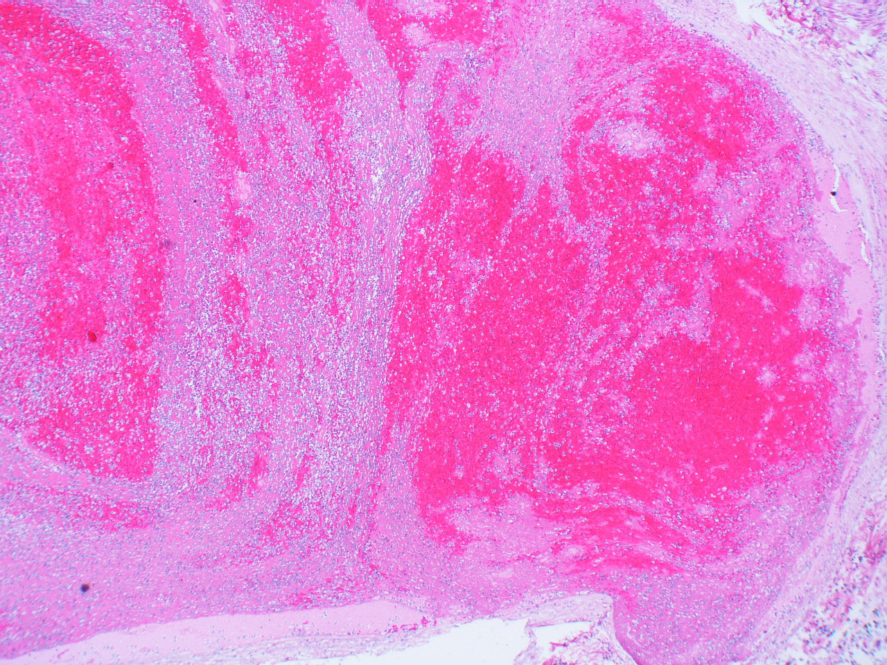
Pri pitve treba trombus odlíšiť od zrazeniny, ktorá vznikla až po smrti (→ 1.10.1 Posmrtné (kadaverózne) zmeny):
| Trombus (za života) | Posmrtná zrazenina | |
|---|---|---|
| Prečo vzniká | aktivácia doštičiek a koagulácie na stene cievy | zrážanie stojacej krvi po zastavení obehu |
| Vzťah k stene | prirastený, pri vyberaní sa trhá | voľný, dá sa vytiahnuť vcelku ako odliatok cievy |
| Konzistencia | tuhší, suchý, krehký – láme sa | mäkký, vlhký, pružný |
| Povrch a rez | matný, často pruhovaný (vrstvenie) | hladký, lesklý, rovnorodý |
| Stena cievy pod ním | poškodený endotel, neskôr vrastajúce granulačné tkanivo | nezmenená |
8.3.3Kde trombus vzniká a čo z toho plynie
To isté dianie má rôzne následky podľa toho, v ktorej časti riečiska prebehne: v tepne ohrozuje tkanivo za uzáverom, v žile pľúca, v srdci celý veľký obeh.
| Miesto | Hlavná podmienka | Druh trombu | Čo hrozí |
|---|---|---|---|
| tepna | poškodený endotel – prasknutý aterosklerotický plát, zápal steny, aneuryzma | biely, často uzatvárajúci | ischémia až infarkt za uzáverom (srdce, mozog, končatina, črevo) |
| hlboké žily dolných končatín | stáza + trombofília | červený, dlhý, slabo prirastený | odtrhnutie → embólia do pľúc; neskôr poškodené chlopne žily a trvalý opuch |
| povrchové žily | varixy, kanyla, zápal steny | červený, pevne prirastený v zapálenej stene | bolestivý tuhý pruh; emboluje zriedkavejšie |
| srdce | nehybná stena nad infarktom, rozšírená predsieň pri fibrilácii, poškodená chlopňa | nástenný, zmiešaný | embólia do veľkého obehu – mozog, obličky, slezina, končatiny, črevo |
| kapiláry a arterioly | celková aktivácia koagulácie alebo doštičiek | hyalínne mikrotromby | drobné ischemické ložiská v mnohých orgánoch naraz |
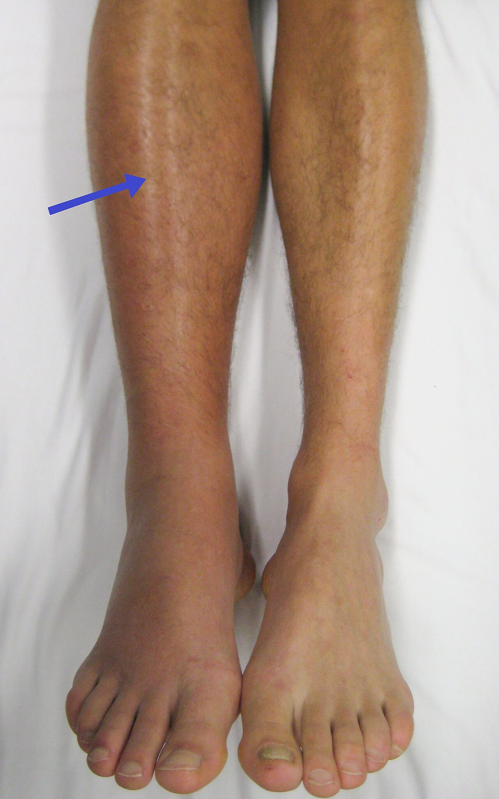
Kedysi sa trombóza povrchových žíl nazývala tromboflebitída (zápal so zrazeninou, vraj neškodný) a trombóza hlbokých žíl flebotrombóza (zrazenina bez zápalu, nebezpečná). Dnes sa hovorí o povrchovej a hlbokej žilovej trombóze: v oboch prípadoch je prvotná zrazenina a zápal steny je reakciou na ňu. Ani povrchová trombóza nie je vždy nevinná – v súboroch pacientov s ňou mala asi štvrtina súčasne trombózu hlbokých žíl a necelých 5 % pľúcnu embóliu.
Hlboká žilová trombóza: jednostranný opuch, bolesť a teplejšia, modrasto-červená končatina – žila je upchatá, hydrostatický tlak pred prekážkou vytláča tekutinu do tkaniva. Až polovica akútnych trombóz však nemá typické príznaky a prvým prejavom je až dýchavica pri embólii. Potvrdí ju ultrazvuk (žila sa nedá stlačiť); D-diméry sú veľmi citlivé, ale málo špecifické – normálna hodnota pri nízkej pravdepodobnosti hovorí proti trombóze, zvýšená ju nedokazuje.
8.3.4Osud trombu v čase
Trombus nie je stály útvar – od prvej chvíle oň súperí koagulácia, ktorá ho zväčšuje, s fibrinolýzou a makrofágmi, ktoré ho rozkladajú. Čo prevládne, závisí od veľkosti trombu, od toho, ako pevne drží, a od času:
| Čas | Dej | Výsledok |
|---|---|---|
| minúty až hodiny | narastanie (propagácia) – trombus spomaľuje prúd, stáza zráža ďalšiu krv; rastie po prúde aj proti nemu | dlhší trombus, uzáver priesvitu, v žile voľný chvost |
| hodiny až dni | rozpustenie (trombolýza) – plazmín štiepi čerstvý fibrín | malý nástenný trombus zmizne bez stopy |
| kedykoľvek, najmä prvé dni | odtrhnutie – trombus alebo jeho časť odnesie prúd | embólia (→ 8.4) |
| od niekoľkých dní | organizácia – zo steny vrastá granulačné tkanivo, makrofágy trombus rozkladajú, fibroblasty ho nahrádzajú väzivom | trombus pevne zrastie so stenou; väzivová platnička alebo uzáver |
| týždne | rekanalizácia – novotvorené kapiláry v trombe sa spoja a rozšíria na kanály | čiastočné obnovenie prietoku, v priesvite väzivové priehradky |
| zriedkavo | puriformné zmäknutie – enzýmy leukocytov skvapalnia stred veľkého trombu (najmä v srdci) | kašovitá hmota pripomínajúca hnis, ktorá však hnisom nie je; ľahko emboluje |
Organizácia a rekanalizácia prebiehajú rovnako ako pri každom materiáli, ktorý telo nevie vstrebať – makrofágy z okraja, za nimi granulačné tkanivo (→ 5.7 Organizácia: čo telo samo nevstrebe). Stupeň organizácie je zároveň „hodinami“ trombu: čerstvý trombus je len z krviniek a fibrínu, starší prerastajú bunky zo steny; histologicky sa rozlišujú tri stupne, z ktorých najstarší zodpovedá trombu staršiemu než asi dva mesiace. Patológ tak vie pri smrteľnej embólii povedať, ako dlho zrazenina v žile bola.
Hranica reverzibility trombózy je začiatok organizácie: kým je trombus len z fibrínu a krviniek, dá sa rozpustiť (vlastnou fibrinolýzou alebo liekom). Keď doň vrastie granulačné tkanivo, už sa nerozpustí – môže sa len rekanalizovať.
8.4Embólia – čo krv zanesie ďalej
Embólia je zavlečenie materiálu, ktorý sa v krvi nerozpúšťa – tuhého, tekutého alebo plynného –, prúdom krvi do miesta, kde je cieva užšia ako on; unášaný materiál je embolus (vmetok). Sekcia najprv ukazuje, kam embolus podľa miesta vzniku doputuje, potom na pľúcnej trombembólii ako prototype vysvetľuje následky a ostatné druhy embolov opisuje len tým, čím sa od nej líšia.
Embolus letí s prúdom, kým sa nezaklinuje: zo žíl do pľúc, zo srdca a tepien do orgánov veľkého obehu. Najčastejší je odtrhnutý trombus. Následok určuje veľkosť embolu a to, či má povodie náhradný prívod.
8.4.1Kam embolus doputuje
Cestu embolu určuje miesto, kde do krvi vstúpil, lebo ďalej už len sleduje prúd a zastaví sa v prvom riečisku, ktoré sa zužuje (Obr. 8.4). Podľa toho sú štyri cesty:
- Žilová (do pľúc). Embolus zo žíl veľkého obehu prejde pravým srdcom a uviazne vo vetvách pľúcnice. Zdrojom sú takmer vždy hlboké žily dolných končatín.
- Tepnová (do orgánov). Embolus z ľavého srdca alebo z aorty uviazne v tepnách veľkého obehu – najčastejšie v mozgu, ďalej v dolných končatinách, čreve, obličkách a slezine. Zdrojom je trombus v ľavej predsieni (pri fibrilácii predsiení) alebo v komore (nad infarktom), vegetácia na chlopni pri endokarditíde, alebo ateróm aorty.
- Paradoxná (zo žily do tepny). Žilový embolus obíde pľúca otvorom v srdcovej priehradke a skončí vo veľkom obehu. Treba na to dve veci: otvor – priechodné foramen ovale má asi štvrtina ľudí – a vyšší tlak v pravej predsieni než v ľavej, trvalo (pľúcna hypertenzia) alebo aspoň na chvíľu (kašeľ, tlačenie na stolicu).
- Retrográdna (proti prúdu). Zriedkavá: materiál sa v žile pohne proti smeru toku. Opísané je to najmä pri vzduchu, ktorý je ľahší než krv – u sediaceho pacienta môže zo žíl hrudníka a krku vystúpiť do žíl mozgu.
8.4.2Pľúcna trombembólia – prototyp
Pľúcna embólia odtrhnutým trombom je najčastejšia a najzávažnejšia embólia (ročne postihne približne 40–115 ľudí zo 100 000), a preto na nej vidno všetky zákonitosti. Zrazenina pochádza asi v 90–95 % z hlbokých žíl dolných končatín; pri smrteľných embóliách sa východisko nájde približne v troch štvrtinách prípadov v žilách predkolenia, v pätine v stehnových a zvyšok v bedrových žilách.
trombus v hlbokej žile sa odtrhne → dolná dutá žila → pravé srdce → zaklinuje sa vo vetve pľúcnice → za uzáverom sa pľúca vetrajú, ale neprekrvujú → krv sa neokysličí (hypoxémia) a pravá komora musí tlačiť proti náhle zvýšenému odporu → pri veľkom embole pravá komora zlyhá → ľavá komora nemá čo prečerpať → obštrukčný šok, náhla smrť
Následok závisí hlavne od toho, akú časť pľúcneho riečiska embolus naraz vyradí:
| Rozsah | Čo sa stane | Morfológia |
|---|---|---|
| masívna embólia – kmeň pľúcnice, jej rozvetvenie („jazdecký“ embolus) alebo veľká časť vetiev naraz (uvádza sa viac než asi 60 % riečiska) | akútne zlyhanie pravej komory, šok, smrť v priebehu minút | stočená zrazenina – odliatok žily – v kmeni pľúcnice; rozšírená pravá komora; pľúca bez infarktu, lebo naň nebol čas |
| stredná embólia – lobárna alebo segmentová vetva | dýchavica, bolesť na hrudníku; infarkt len niekedy | embolus vo vetve; prípadne klinovitý červený infarkt pod pohrudnicou |
| drobná embólia – malé vetvy | väčšinou (asi 60–80 %) bez príznakov | embolus sa rozpustí alebo zorganizuje; v cieve ostanú tenké väzivové mostíky |
| opakovaná (sukcesívna) drobná embólia | postupné zmenšovanie riečiska → pľúcna hypertenzia | organizované emboly v mnohých vetvách; hypertrofia pravej komory (→ 6.2 Hypertrofia – tie isté bunky, viac hmoty) |
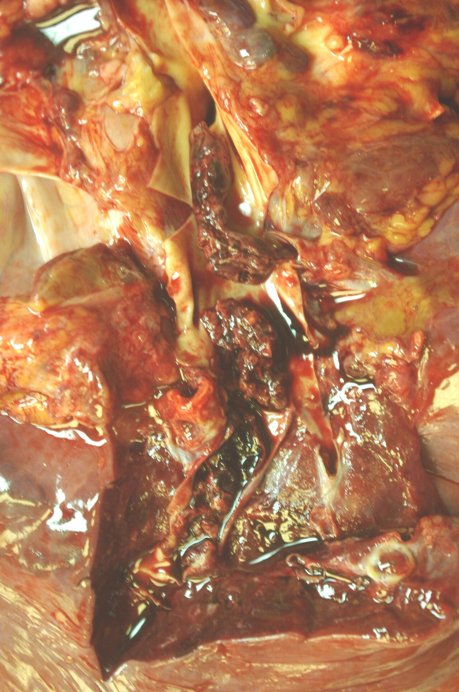
Prečo embólia väčšinou nespôsobí infarkt pľúc. Pľúca majú dvojité zásobenie: popri pľúcnici ich vyživujú bronchiálne tepny z aorty. Keď sa vetva pľúcnice upchá, tkanivo ďalej žije z bronchiálneho obehu. Infarkt vznikne až vtedy, keď je slabý aj ten – typicky pri zlyhávaní ľavého srdca, keď je v pľúcach venostáza. Na CT sa infarkt nájde približne pri tretine embólií, ktoré pacient prežije, a pri pitve zomretých častejšie. Pretože bronchiálne tepny do odumretého ložiska ďalej privádzajú krv, je infarkt pľúc červený (→ 8.6.2).
Od pacienta k nálezu: náhla dýchavica, bolesť pri nádychu, zrýchlený pulz, niekedy vykašliavanie krvi (krv z hemoragického infarktu) – a v anamnéze operácia, sadra, dlhý let alebo nádor. Diagnózu potvrdí CT angiografia pľúcnice (výpadok náplne). Čo píše patológ: embolus (nie posmrtná zrazenina – je krehký, vrstvený, stočený, kalibrom nesedí k pľúcnici), jeho vek, zdroj v žilách končatín a pľúcnu embóliu ako bezprostrednú príčinu smrti; základnou chorobou je to, čo trombózu vyvolalo.
8.4.3Ostatné emboly: čím sa líšia
Iný materiál než trombus sa do krvi dostane len vtedy, keď sa otvorí cieva a zároveň je čo nasať alebo vtlačiť – z tela (tuk, plodová voda, obsah aterómu, nádor) alebo zvonka (vzduch, cudzí materiál vpravený do žily). Od trombembólie sa tieto embólie líšia tým, že okrem mechanického upchatia škodia aj chemicky alebo zápalom:
| Embolus | Odkiaľ a kedy | Kde uviazne a čím škodí | Dôkaz |
|---|---|---|---|
| tuk a kostná dreň | zlomeniny dlhých kostí a panvy, rozsiahle pomliaždenie podkožného tuku, resuscitácia – tuk je vtlačený do roztrhnutých žíl drene | kapiláry pľúc; drobné kvapôčky prejdú ďalej do mozgu a kože. Tuk sám je v pľúcach častý a nemý; syndróm tukovej embólie vzniká po 1–3 dňoch, keď lipázy uvoľnia z tuku mastné kyseliny a tie poškodia endotel (dýchavica, porucha vedomia, petechie) | okrúhle prázdne priestory v cievach (tuk sa pri spracovaní vyplaví); farbenie tuku na zmrazenom reze (→ 0.6 Farbenia a histochémia) |
| vzduch | otvorená veľká žila na krku alebo hrudníku, operácie, cievne katétre, pôrod – v žilách blízko srdca je podtlak, ktorý vzduch nasaje | pravá komora: spenená krv je stlačiteľná a komora ju neprečerpá. Nebezpečné sú rádovo stovky mililitrov rýchlo nasatého vzduchu (uvádza sa od 100 ml; 300–500 ml rýchlosťou 100 ml/min je smrteľných) | pri pitve sa pravé srdce otvára pod vodou – unikajú bubliny |
| dusík – dekompresná choroba | potápač dýcha stlačený vzduch, v krvi a tkanivách sa rozpustí viac dusíka; pri rýchlom výstupe sa dusík uvoľní ako bubliny | drobné cievy a tkanivá: bolesti kĺbov a svalov, kožná vyrážka, poškodenie miechy a mozgu, dýchavica | anamnéza; liečbou je pretlaková komora, ktorá bubliny znova rozpustí |
| plodová voda | pôrod alebo krátko po ňom – trhlinou v plodových obaloch a žilách maternice | pľúcne cievy matky; prudká reakcia na zložky plodovej vody → zlyhanie dýchania a obehu, DIC | v pľúcnych cievach matky dlaždicové bunky kože plodu, chĺpky (lanugo), tuk z mazu |
| cholesterolové kryštály (ateroembólia) | prasknutý ateróm aorty, často po katetrizácii alebo operácii ciev | arterioly obličiek, kože nôh, čreva; kryštály vyvolajú zápal steny a uzáver → zhoršenie obličiek, modré prsty | ihlicovité štrbiny v priesvite arterioly (kryštály sa pri spracovaní rozpustia) |
| nádorové bunky a úlomky | nádor vrastajúci do žíl (karcinóm obličky, pečene) | pľúcnica alebo jej vetvy; bunky, ktoré prežijú, založia metastázu | nádorové bunky v priesvite ciev |
| septický embolus | infikovaný trombus – zapálená žila, vegetácia na chlopni pri endokarditíde | infarkt, ktorý zhnisá, a metastatický absces | baktérie alebo huby v embole |
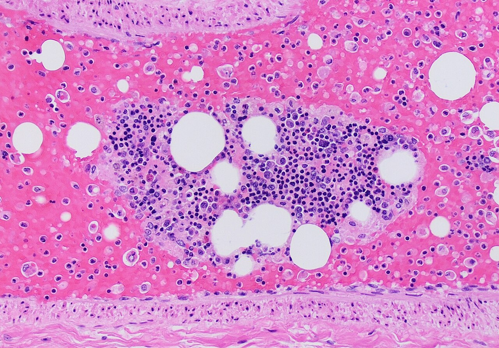
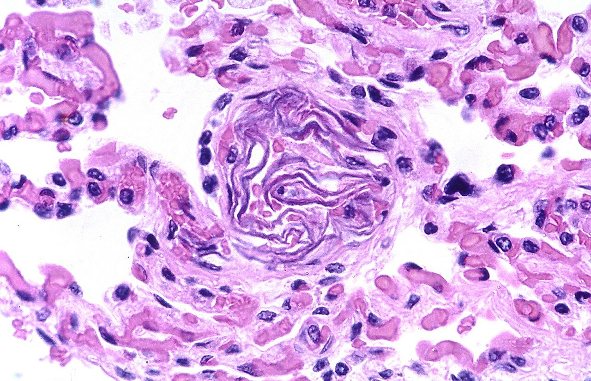
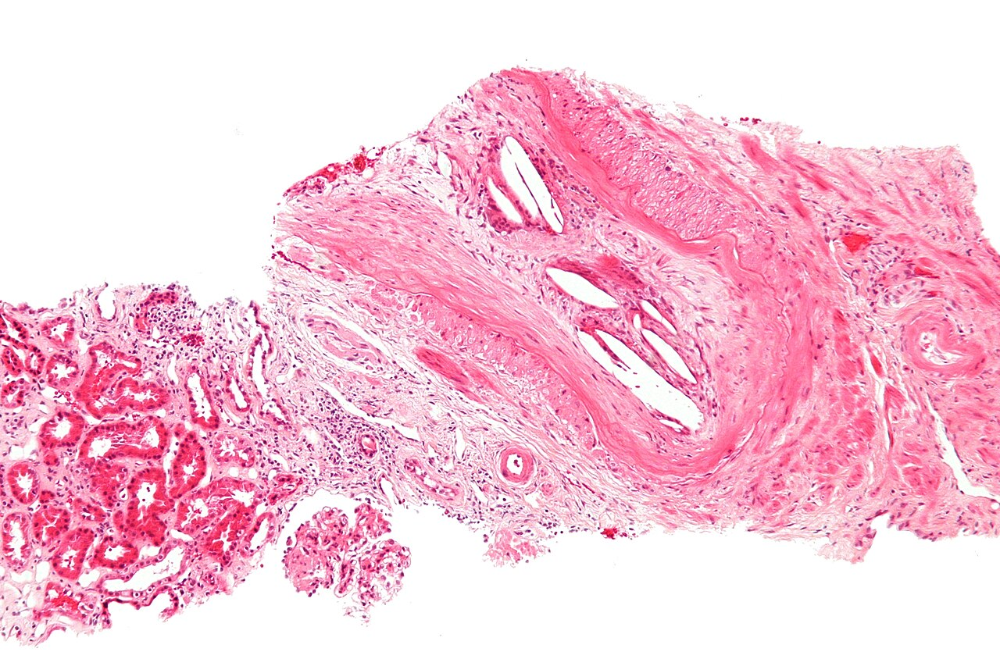
Kedysi sa embólia plodovou vodou pokladala za takmer vždy smrteľnú (uvádzala sa smrtnosť okolo 80 %) a vysvetľovala sa mechanickým upchatím pľúc. Dnes sa pri včasnej intenzívnej liečbe uvádza smrtnosť 11–44 % (výskyt 2–8 na 100 000 pôrodov) a za podstatu sa považuje prudká zápalová a koagulačná reakcia matky na zložky plodovej vody. Kedysi „kesónová choroba“ (podľa pretlakových komôr pri stavbe mostov), dnes dekompresná choroba.
Syndróm tukovej embólie sa prejaví s odstupom: pacient so zlomeninou stehnovej kosti je deň-dva v poriadku a potom sa objaví dýchavica, zmätenosť a drobné petechie na hrudníku a v spojovkách. Odstup zodpovedá času, ktorý treba na chemické poškodenie endotelu. Preto sa zlomeniny dlhých kostí stabilizujú čo najskôr, najlepšie do 24 hodín.
8.4.4Metastáza – embolus, ktorý na novom mieste pokračuje
Metastáza je zavlečenie chorobného deja na vzdialené miesto, kde pokračuje ďalej – od obyčajnej embólie sa líši tým, že zanesený materiál je živý (nádorové bunky, mikróby). Podľa cesty, ktorou sa šíri, je trojaká:
- hematogénna – krvou, podľa tých istých pravidiel ako embólia: z povodia vrátnice do pečene, zo žíl veľkého obehu do pľúc, z pľúc a ľavého srdca kamkoľvek. Patria sem nádorové mikroemboly aj septické emboly, z ktorých vznikajú metastatické abscesy (→ 4.5.4 Hnis sa šíri – komplikácie hnisavého zápalu),
- lymfogénna – lymfatickými cievami do spádových uzlín,
- porogénna (implantačná) – po povrchu a priesvitom dutín a dutých orgánov: rozsev po pobrušnici a pohrudnici, močovými cestami, prieduškami, alebo priamym dotykom dvoch protiľahlých povrchov.
Podrobne sa metastázovanie nádorov preberá pri nádoroch; tu stačí, že hematogénna metastáza je embólia s pokračovaním.
8.5Ďalšie príčiny: prekážka v stene, zvonka, v krvi a v sieti
Trombus a embolus sú prekážky v priesvite cievy. Prietok však môže znížiť aj dej, ktorý v priesvite nesedí – a podľa toho, kde vzhľadom na cievu prekážka leží, sa dajú usporiadať všetky ostatné príčiny miestnej poruchy obehu.
Prietok zníži prekážka v priesvite (trombus, embolus), v stene (ateróm, spazmus, zápal), zvonka (stlačenie), v krvi (hustá krv), alebo v sieti (krv odtečie ľahšou cestou – steal). Často sa končia rovnako: trombózou.
| Kde je prekážka | Dej | Mechanizmus | Príklady a následok |
|---|---|---|---|
| v stene | ateroskleróza | plát zužuje priesvit pomaly; keď praskne alebo sa zvredovatie, nasadne naň trombus a uzáver je náhly | najčastejšia príčina ischémie vôbec: srdce, mozog, dolné končatiny; komplikácie – trombóza, krvácanie do plátu, embolizácia obsahu, aneuryzma a jej prasknutie |
| spazmus | hladký sval tepny sa stiahne – porušený endotel tvorí menej uvoľňujúceho oxidu dusnatého a sval reaguje prehnane na sťahujúce podnety | vazospastická (Prinzmetalova) angína pectoris a infarkt aj pri vencovitých tepnách bez zúženia; Raynaudov fenomén – po chlade alebo strese prsty zblednú alebo zmodrejú a po uvoľnení spazmu sčervenejú (reaktívna hyperémia). Na reze sa spazmus dokázať nedá | |
| zápal steny | vaskulitída poškodí endotel a stenu zhrubne; zápal môže prejsť aj z okolia | uzáver trombom; na žile je zápal (flebitída) a trombóza vždy spolu (→ 8.3.3); vaskulitídy s granulómami → 7.9 Granulóm na poškodenej cieve a väzive | |
| zvonka | stlačenie (kompresia) | tlak okolia prevýši tlak v cieve – skôr v žile, ktorá má nízky tlak a tenkú stenu | nádor, opuch a zápal v nepoddajnom priestore, zaškrtenie čreva v prietrži, pretočenie orgánu, podviazanie pri operácii, nadpočetné krčné rebro; často nasleduje trombóza |
| v krvi | hyperviskozita | hustá krv tečie ťažko najmä kapilárami – je v nej priveľa bielkoviny alebo krviniek | Waldenströmova makroglobulinémia (najčastejšie), plazmocytový myelóm, polycytémia (polyglobúlia, pletora – zmnoženie krviniek), leukémie, ťažká dehydratácia; kosáčikovitá anémia (tuhé erytrocyty); stáza v drobných cievach a tromby |
| v sieti | steal syndróm („kradnutie“ krvi) | krv tečie cestou najmenšieho odporu – ak sa vedľa povodia otvorí riečisko s nízkym odporom, odvedie krv aj z neho | artériovenózna spojka alebo malformácia: krv uniká priamo do žily a tkanivo v okolí trpí ischémiou; zúženie podkľúčnej tepny pred odstupom stavcovej tepny: krv tečie stavcovou tepnou spätne do ruky a chýba mozgu |
Pomalé zužovanie tepny aterosklerózou pacient dlho necíti, lebo tkanivo v pokoji vystačí s menším prietokom; bolesť príde pri záťaži, keď potreba kyslíka stúpne a zúžená tepna viac krvi nepustí – angína pectoris v srdci, klaudikácie v lýtku. Po odpočinku bolesť ustúpi: ischémia bola vratná a nekróza nevznikla.
Infarkt zo spazmu u mladých. Infarkt myokardu zo spazmu vencovitej tepny sa uvádza najmä u mladých ľudí. Že spazmus môže spôsobiť infarkt aj pri nezúžených tepnách, doložené je; vekové určenie nie.
8.6Ischémia a infarkt
Ischémia je obmedzenie až zastavenie prítoku tepnovej krvi do tkaniva; tkanivu chýba kyslík a živiny a neodplavujú sa z neho splodiny. Či sa skončí len prechodnou bolesťou, pomalou atrofiou, alebo odumretím tkaniva – infarktom –, nerozhoduje len uzáver sám, ale aj to, na aké tkanivo a aké riečisko natrafí. Sekcia preto najprv vysvetľuje tieto podmienky, potom morfológiu infarktu, jeho vývoj v čase a napokon infarkt bez uzáveru tepny.
Infarkt = ischemická nekróza. O výsledku uzáveru rozhoduje terén: náhradný prívod, rýchlosť uzáveru, citlivosť tkaniva, stav obehu. Hustý orgán s koncovou tepnou → biely infarkt; dvojitý prívod, žilový uzáver alebo reperfúzia → červený.
8.6.1Čo rozhodne, či ischémia skončí infarktom
Rovnaký uzáver má v rôznych orgánoch rôzny následok. Vysvetľujú to štyri premenné – tie isté, ktorými sa v celej knihe opisuje terén orgánu:
| Premenná | Priaznivý stav | Nepriaznivý stav |
|---|---|---|
| stavba riečiska | dvojité zásobenie (pľúca: pľúcnica + bronchiálne tepny; pečeň: pečeňová tepna + vrátnica) alebo bohaté spojky – anastomózy (črevo, ruka) | koncové tepny bez spojok – oblička, slezina, sietnica; prakticky aj srdce a mozog |
| rýchlosť uzáveru | pomalé zužovanie – existujúce drobné spojky sa stihnú rozšíriť na kolaterály a tkanivo zníži nároky (atrofia) | náhly uzáver embolom alebo trombom na prasknutom pláte |
| citlivosť tkaniva na nedostatok kyslíka | málo náročné tkanivá – väzivo, chrupka, kostrový sval v pokoji | neuróny (znesú len minúty), kardiomyocyty, bunky proximálnych tubulov obličky |
| stav krvi a celého obehu | normálny tlak a okysličenie | nízky tlak (šok), anémia, hypoxémia, zlyhávajúce srdce – ten istý uzáver spôsobí väčší infarkt |
Kým sú bunky poškodené vratne, obnovenie prietoku ich zachráni. Hranica reverzibility je bod, za ktorým mitochondrie už nevyrobia ATP ani po návrate kyslíka a membrány sa rozpadnú; v myokarde sa prvé bunky za ňu dostanú po približne 20 minútach úplnej ischémie (→ 1.5.3 Bod nezvratnosti a reperfúzia). Slabšia alebo krátka ischémia nekrózu nespôsobí – prejaví sa bolesťou pri záťaži, pri dlhom trvaní atrofiou a stukovatením buniek (→ 1.2.1 Príčiny atrofie).
Tá istá embólia do pľúcnice u zdravého človeka infarkt nespôsobí, u pacienta so zlyhávajúcim ľavým srdcom áno – rozdiel robí štvrtá premenná (stav obehu), ktorá oslabí druhý prívod.
8.6.2Infarkt: biely a červený
Infarkt je ložisko ischemickej nekrózy, ktoré vzniklo uzáverom prívodnej tepny, zriedkavejšie zablokovaním žilového odtoku (→ 8.7). Jeho farba závisí od jedinej veci: či sa do odumretého tkaniva ešte dostane krv.
- MA: ložisko pri povrchu orgánu, na reze klinovité – hrot mieri k uzavretej tepne, báza k puzdru, lebo tepny sa vetvia vejárovito od hilu k povrchu (v srdci a mozgu je tvar nepravidelný, lebo sa tam povodia prekrývajú). Mierne vyvýšené a tuhšie než okolie – odumreté bunky napučali. Biely infarkt je bledožltý a suchý, s úzkym červeným lemom (prekrvenie a krvácanie na hranici so živým tkanivom); červený infarkt je tmavočervený, lebo je presiaknutý krvou. Ostro ohraničený.
- MI: koagulačná nekróza – obrysy buniek a stavba tkaniva ostávajú, jadrá miznú, cytoplazma je sýtoružová, lebo denaturované bielkoviny viažu viac eozínu (→ 1.6.1 Koagulačná nekróza). Na okraji lem neutrofilov, neskôr makrofágy a granulačné tkanivo. V mozgu sa tkanivo namiesto toho skvapalní (→ 1.6.2 Kolikvačná nekróza).
| Biely (anemický) infarkt | Červený (hemoragický) infarkt | |
|---|---|---|
| Podmienka | uzavretá koncová tepna v hustom orgáne – do ložiska sa nemá odkiaľ a kam dostať krv | do mŕtveho tkaniva ďalej priteká krv, ktorú odumreté kapiláry neudržia |
| Kedy | uzáver tepny bez náhradného prívodu | dvojité zásobenie alebo spojky; riedke tkanivo; uzáver žily; obnovený prietok (rozpad embolu, liečebné otvorenie tepny) |
| Orgány | srdce, oblička, slezina | pľúca, črevo; mozog po reperfúzii; orgán so zaškrtenou stopkou |
| Vzhľad | bledožltý, suchý, červený lem | tmavočervený, vlhký, bez zreteľného lemu |
| Po zhojení | belavá vtiahnutá jazva | jazva hrdzavá od hemosiderínu |
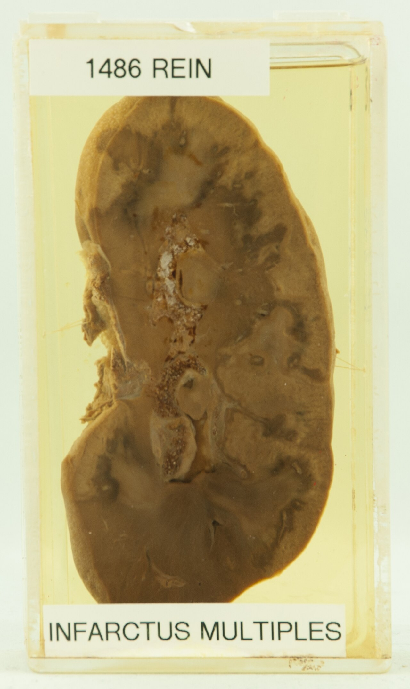

Slezina sa v niektorých starších prameňoch uvádza medzi orgánmi s červeným infarktom; po uzávere jej tepny embolom je však infarkt typicky bledý klin, ktorý sa len niekedy druhotne prekrváca. Na končatine sa nekróza z uzáveru tepny prejaví ako gangréna (→ 1.8 Gangréna).
Červený infarkt pľúc (Obr. 1.16 v kap. 1) a ďalšie podmienky presiaknutia nekrózy krvou rozoberá → 1.6.6 Hemoragická nekróza.
8.6.3Infarkt v čase
Infarkt sa nedá vidieť hneď – medzi smrťou buniek a zmenou, ktorú zachytí oko alebo mikroskop, je odstup. Časová os je rovnaká v každom orgáne, líši sa len rýchlosťou; údaje v tabuľke platia pre infarkt myokardu, kde sú najlepšie preskúmané.
| Čas od uzáveru | Voľným okom | V mikroskope | Čo sa deje |
|---|---|---|---|
| prvé hodiny (do ≈ 12 h) | nič | spočiatku nič; postupne opuch, zvlnené svalové vlákna, sýtejšie ružová cytoplazma | bunky sú mŕtve, ale ich bielkoviny ešte nestihli zdenaturovať a jadrá sa rozpadnúť |
| ≈ 12 h – 2 dni | ložisko začína blednúť (alebo tmavnúť pri červenom infarkte) | koagulačná nekróza bez jadier; z okraja vstupujú neutrofily – prichádzajú v priebehu hodín, najviac ich je po 1–2 dňoch | zápal odpovedá na obsah rozpadnutých buniek (→ 3.4.2) |
| prvý týždeň | žltosivé, mäkké ložisko s prekrveným lemom | rozpad neutrofilov a mŕtvych buniek, prichádzajú makrofágy | upratovanie; stena srdca je v tomto čase najslabšia – môže prasknúť |
| od ≈ 1. týždňa (najviac 2.–3. týždeň) | rôsolovitý červený lem, ktorý postupuje do stredu | granulačné tkanivo – nové kapiláry, fibroblasty, riedky kolagén, siderofágy | organizácia nekrózy (→ 5.3 Granulačné tkanivo – motor reparácie) |
| týždne až mesiace | belavá tuhá jazva, povrch orgánu nad ňou vtiahnutý | hustý kolagén, málo buniek a ciev | jazva pumpovať ani filtrovať nevie; v mozgu ostáva namiesto nej dutina – pseudocysta |
Ak nekróza siaha po seróznu blanu, vyzráža sa na nej nad ložiskom fibrín: nad infarktom srdca vzniká ohraničená fibrinózna perikarditída, nad infarktom pľúc pleuritída (→ 4.6.1 Na seróznych blanách). Ak embolus niesol baktérie, infarkt zhnisá a zmení sa na absces.
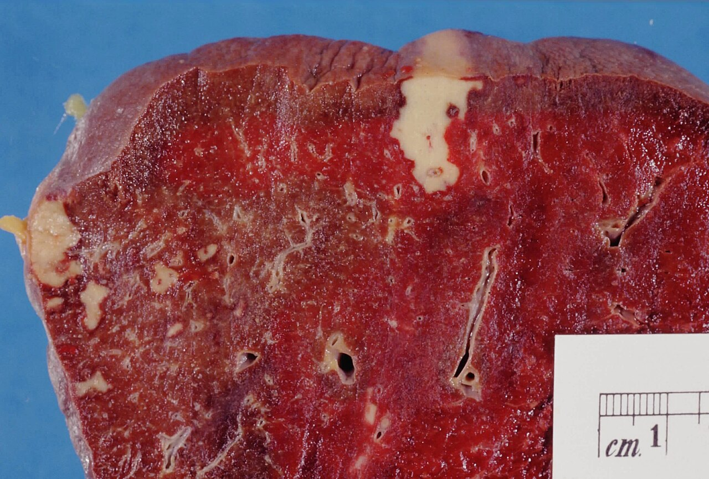
Vitálna reakcia datuje infarkt. Neutrofily, makrofágy a granulačné tkanivo vznikajú len v živom organizme, a to v známom slede – patológ podľa nich povie, či infarkt vznikol hodiny, dni alebo týždne pred smrťou. Človek, ktorý zomrie na arytmiu v prvej hodine infarktu, nemusí mať v srdci viditeľné nič; diagnózu vtedy nesie nález v tepne (čerstvý trombus na prasknutom pláte).
8.6.4Infarkt bez uzáveru tepny
Nekróza z nedostatku krvi nemusí mať za sebou upchatú tepnu – stačí, že prietok klesne pod potrebu. Deje sa to dvoma spôsobmi:
- Zúžená tepna a zvýšené nároky. Tepna zúžená aterosklerózou stačí v pokoji; pri horúčke, tachykardii alebo anémii potreba stúpne a časť svaloviny odumrie, hoci nový uzáver nevznikol.
- Pokles tlaku v celom obehu. Pri šoku dostávajú najmenej krvi miesta najďalej od zdroja – rozvodia (watershed), hraničné pásma medzi povodiami dvoch tepien. Infarkty z nízkeho tlaku preto ležia v mozgu na hraniciach povodí mozgových tepien a v hrubom čreve na rozhraní povodí mezenterických tepien – najmä v slezinovom ohybe. V čreve sa k nízkemu tlaku pridáva stiahnutie mezenterických tepien, ktorým telo presúva krv k srdcu a mozgu – neokluzívna mezenterická ischémia.
Akútna ischémia čreva má štyri príčiny, ktoré sa líšia pacientom: embólia do hornej mezenterickej tepny (asi polovica – pacient s fibriláciou predsiení), trombóza tepny na aterosklerotickom pláte (15–25 %), neokluzívna ischémia pri šoku a zlyhaní srdca (asi 20 %) a trombóza mezenterickej žily (5–15 % – trombofília, nádor). Črevo je pri všetkých tmavočervené, lebo má bohaté spojky a riedku stenu – infarkt čreva je hemoragický.
8.7Hyperémia – priveľa krvi v riečisku
Hyperémia (prekrvenie) je zväčšený objem krvi v cievach tkaniva. Vzniká dvoma opačnými cestami – krvi viac priteká, alebo horšie odteká – a tie sa líšia farbou, teplotou aj významom. Prvá je užitočná odpoveď, druhá porucha, ktorá môže vyústiť do opuchu aj do nekrózy.
Aktívna hyperémia: rozšírené arterioly → viac okysličenej krvi → červené, teplé (práca, zápal). Pasívna (venostáza): viazne odtok → odkysličená krv stojí → modročervené, studené, opuchnuté. Krajnosť venostázy = hemoragická infarzácia.
| Aktívna (arteriálna) hyperémia | Pasívna (venózna) hyperémia – venostáza, kongescia | |
|---|---|---|
| Mechanizmus | arterioly sa rozšíria a otvoria sa kapiláry, ktoré boli v pokoji zavreté | krv nemá kam odtiecť – žila je upchatá alebo stlačená, alebo zlyháva srdce |
| Príčiny | pracujúci sval, trávenie, odvod tepla kožou, začervenanie; zápal | miestne: trombóza, stlačenie alebo pretočenie žily; celkovo: zlyhanie srdca |
| Krv v tkanive | okysličená, tečie rýchlo | odkysličená, stojí |
| Vzhľad | jasnočervené, teplé | modročervené (cyanóza), chladnejšie, zväčšené a ťažšie |
| Následok | žiadny – po skončení podnetu zmizne | opuch; pri dlhom trvaní hypoxia, atrofia buniek, drobné krvácania a fibróza |
Zvláštne miesto má hyperémia pri zápale: drobné cievy sú rozšírené účinkom mediátorov, krv v nich po úvodnom zrýchlení tečie pomaly až stojí a stena prepúšťa bielkoviny aj bunky. Od čistej aktívnej hyperémie sa teda líši spomaleným tokom a zvýšenou priepustnosťou; výsledkom je exsudát (→ 3.3 Cievna fáza – exsudácia).
- Opuch. Krv, ktorá nemôže odtiecť, zvyšuje hydrostatický tlak v kapilárach; ten vytláča cez neporušenú stenu vodu so soľami – transsudát, chudobný na bielkoviny. Pri zápale je to naopak: stena je priepustná a uniká exsudát bohatý na bielkoviny (→ 3.3 Cievna fáza – exsudácia). Sily, ktoré tekutinu v kapiláre držia, a druhy edému rozoberá → 9.5 Edém – tekutina mimo ciev a buniek.
- Hypoxia. Stojaca krv odovzdá kyslík a nová nepriteká → bunky atrofujú a tukovatejú.
- Drobné krvácania. Preplnené kapiláry prepúšťajú erytrocyty; makrofágy ich pohltia a železo uložia ako hemosiderín (siderofágy) – tkanivo hnedne a po mesiacoch tuhne väzivom. Najlepšie to vidno v pľúcach a pečeni pri zlyhávajúcom srdci (→ 9.4 Zlyhanie srdca: krv sa hromadí pred komorou, ktorá nestačí).
Keď je žilový odtok zablokovaný úplne a náhle, venostáza sa nezastaví pri opuchu – dej sa začne poháňať sám (⟳):
náhly úplný uzáver žíl (zaškrtenie, pretočenie stopky, trombóza) → tepna ďalej vháňa krv, ktorá nemá kam odtiecť → tlak v kapilárach prudko stúpa → opuch a krvácanie do tkaniva → napätie tkaniva stláča ďalšie žily a napokon aj tepny ⟳ → prítok ustane → nekróza presiaknutá krvou – hemoragická infarzácia
Bod zvratu nastane, keď tlak v tkanive prevýši tlak v prívodnej tepne: dovtedy sa dá orgán zachrániť uvoľnením žily (napravenie prietrže, rozkrútenie stopky), potom už nie. Typickým miestom je črevo zaškrtené v prietrži alebo pretočené okolo závesu, a orgány na stopke – semenník a vaječník, kde pretočenie najprv zastaví žilový odtok. Tkanivo je tmavočervené až čierne, opuchnuté a krehké (Obr. 8.12).
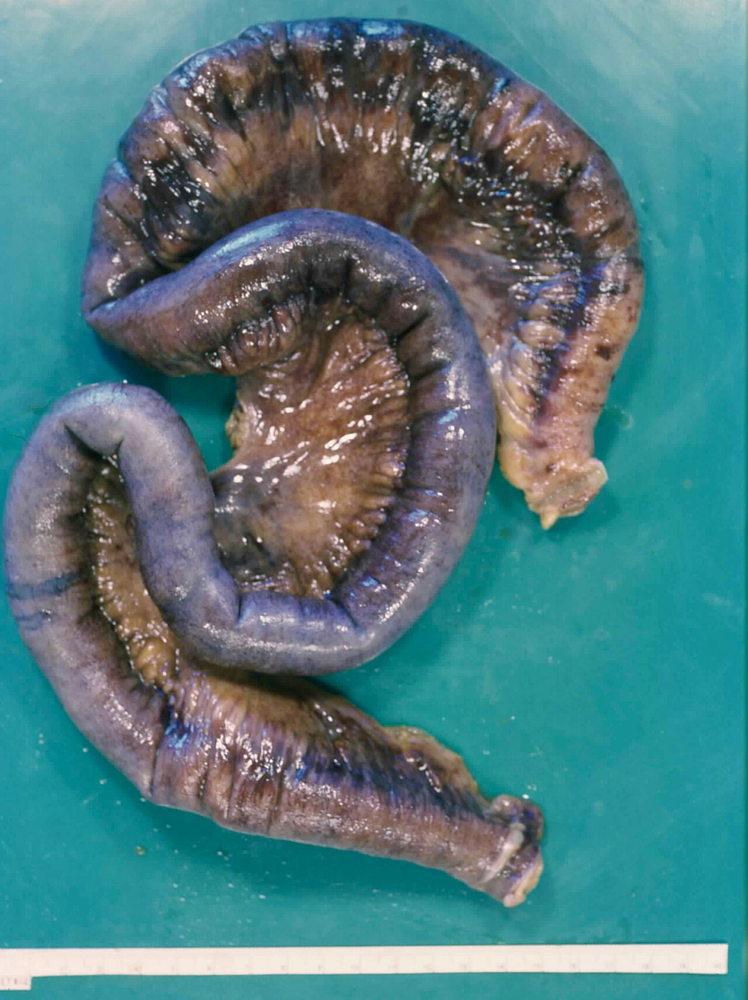
Hemoragický infarkt ≠ hemoragická infarzácia. Infarkt je nekróza z uzáveru tepny, do ktorej krv presiakla druhotne. Infarzácia je nekróza z uzáveru žily – krv je v tkanive od začiatku a nekróza prichádza až po nej. Na reze vyzerajú podobne; rozhodne nález na cievach.
Peristatická hyperémia. Tretí druh prekrvenia popri arteriálnom a venóznom: pri zápale a pri šoku drobné cievy ochabnú, krv v nich stojí a stena prepúšťa tekutinu, bielkoviny aj bunky. Dej sám je opísaný v texte; názov sa v dnešných učebniciach nepoužíva a jeho vymedzenie sa nepodarilo doložiť.
8.8Krvácanie – krv mimo cievy
Krvácanie (hemorágia) je únik krvi z ciev alebo zo srdca – navonok, do telovej dutiny alebo do tkaniva. Sekcia odpovedá na tri otázky: ako krv cievu opustí, ako sa krvácanie nazýva podľa toho, kde krv skončí, a čo spôsobí.
Krv opustí cievu roztrhnutím, nahlodaním alebo presakovaním cez neporušenú stenu. Závažnosť určuje množstvo × rýchlosť × miesto: liter do brucha sa dá prežiť, pár mililitrov do mozgového kmeňa nie.
8.8.1Ako krv cievu opustí
Mechanizmy krvácania sa delia podľa toho, čo sa stalo so stenou cievy:
| Mechanizmus | Čo sa deje so stenou | Príklady |
|---|---|---|
| roztrhnutie (per rhexin) | stena sa náhle pretrhne – zvonka silou, alebo zvnútra tlakom na oslabenom mieste | úraz, prasknutá aneuryzma, prasknutý varix, ruptúra steny srdca po infarkte |
| nahlodanie (per diabrosin) | stenu postupne rozruší dej z okolia | peptický vred, tuberkulózna kaverna, hnisavý zápal, nádor |
| presakovanie (per diapedesin) | stena je celá, erytrocyty prestupujú medzi bunkami endotelu drobných ciev | venostáza, hypoxia a toxické poškodenie kapilár, nedostatok doštičiek, chyby steny (→ 8.9) |
Podľa druhu cievy je krvácanie tepnové (jasnočervená krv strieka v rytme pulzu), žilové (tmavá krv plynule vyteká) alebo kapilárne (krv presakuje z celej plochy).
Kedysi sa presakovanie krviniek cez neporušenú stenu uvádzalo ako tretí druh krvácania pod latinským názvom haemorrhagia per diapedesin. Dnes sa častejšie hovorí o extravazácii erytrocytov – podstata je rovnaká, len sa zdôrazňuje, že nejde o trhlinu, ale o priepustnosť drobných ciev. Na skúške sa používajú oba názvy.
8.8.2Názvoslovie: kde krv skončí
Krvácanie má desiatky názvov, ale všetky odpovedajú na jednu otázku – kam krv vytiekla. Podľa toho sa dajú usporiadať do štyroch skupín:
| Kam | Názov | Čo znamená |
|---|---|---|
| do kože a slizníc | petechie | bodkovité výrony menšie než 2 mm – z kapilár; po zatlačení neblednú, lebo krv je mimo ciev |
| purpura | početné petechie; aj samostatný názov pre škvrny väčšie než 2 mm | |
| ekchymóza | väčší plošný výron („modrina“) | |
| sufúzia | rozsiahly, splývajúci plošný výron | |
| do tkaniva | hematóm | ohraničené nahromadenie krvi, ktoré tlačí na okolie |
| apoplexia | prudké krvácanie, ktoré tkanivo roztriešti – najmä v mozgu | |
| do dutín | hemotorax, hemoperikard, hemoperitoneum (hemaskos) | krv v pohrudnicovej, osrdcovníkovej, brušnej dutine |
| hemartros | krv v kĺbe | |
| hemocefalus | krv v mozgových komorách |
Štvrtú skupinu tvorí krvácanie navonok telesnými otvormi. Tu názov nehovorí len odkiaľ krv vyteká – podľa jej vzhľadu sa dá odhadnúť, ako vysoko leží zdroj a aké je krvácanie prudké:
- Tráviaca rúra. O farbe rozhoduje, či krv prešla žalúdkom: kyselina mení hemoglobín na hnedočierny hematín. Zvratky pri hemateméze preto často pripomínajú kávovú usadeninu a stolica pri meléne je čierna a dechtovitá – zdroj je v pažeráku, žalúdku alebo dvanástniku. Jasnočervená krv v stolici znamená zdroj nízko v čreve alebo veľmi prudké krvácanie. Samotný výron do priesvitu sa označuje podľa orgánu – gastrorágia, enterorágia.
- Dýchacie cesty. Rozlišuje sa množstvo. Pri hemoptýze sú v spúte len pásiky alebo prímes krvi (zápal priedušiek, nádor, infarkt pľúc); hemoptoe je vykašľanie čistej krvi vo väčšom množstve, keď chorobný dej nahlodal väčšiu cievu (kaverna, nádor). Epistaxa je krvácanie zo sliznice nosa.
- Močové a pohlavné cesty. Hematúria je krv v moči – viditeľná okom alebo len v mikroskope. Pri maternici rozhoduje vzťah k cyklu: hypermenorea je menštruácia nadmerne silná, menorágia silná a predĺžená, metrorágia krvácanie mimo menštruácie, ktoré má inú príčinu než cyklus (polyp, hyperplázia, nádor). Gynekológia dnes tieto staršie názvy nahrádza opisnými – silné menštruačné krvácanie a krvácanie medzi menštruáciami.
V staršom patologickom názvosloví sa ekchymózami nazývajú aj drobné výrony pod seróznymi blanami a na slizniciach; hranice medzi kožnými názvami nie sú ostré a rôzne pramene ich kladú inde.
8.8.3Čo krvácanie spôsobí a ako sa výron mení
Následok krvácania určujú tri veci – koľko krvi, ako rýchlo a kam –, a platia nezávisle od seba:
- Množstvo a rýchlosť. Náhlu stratu do asi 15 % objemu krvi (≈ 750 ml u dospelého) telo vyrovná takmer bez príznakov; pri väčšej strate sa zrýchľuje pulz a pri strate nad 30 % klesá tlak – rozvíja sa hemoragický šok (→ 9.6.2 Šok: štyri príčiny). Rovnaké množstvo stratené pomaly telo doplní; opakované malé straty (vred, hemoroidy, silná menštruácia) vyčerpajú zásoby železa → anémia z nedostatku železa.
- Miesto. V uzavretom priestore zabíja tlak, nie strata: krv v osrdcovníku stlačí srdce (tamponáda), krvácanie v lebke stlačí mozog. Krv v kĺbe ho po opakovaní zničí.
- Čas. Krv mimo cievy je cudzí materiál a telo ju odstraňuje – a na výrone to vidno ako zmenu farby:
| Fáza | Farba | Prečo |
|---|---|---|
| čerstvý výron | červená až modrofialová | hemoglobín v erytrocytoch, ktorý stráca kyslík |
| rozklad (dni) | zelenkastá | makrofágy pohltia erytrocyty a hem menia na biliverdín |
| žltá | biliverdín sa mení na bilirubín; časť vykryštalizuje na okraji výronu ako hematoidín | |
| staré krvácanie (týždne až trvalo) | hrdzavohnedá | železo z hemu ostáva v makrofágoch ako hemosiderín |
Malý výron sa takto vstrebe bez stopy. Veľký sa organizuje ako každý nevstrebateľný materiál – zmení sa na hrdzavú jazvu alebo, ak sa stred rozloží skôr, na dutinu s väzivovou stenou (→ 5.7 Organizácia: čo telo samo nevstrebe).
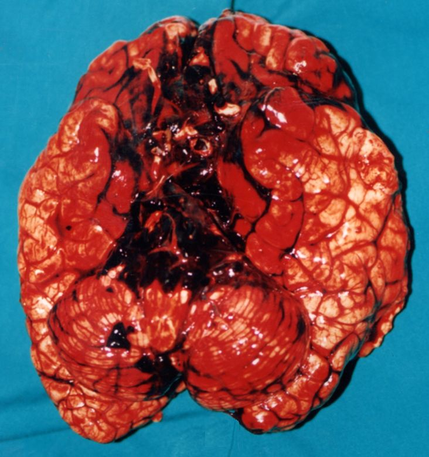
Hemosiderín dokazuje staršie krvácanie. Perlsova reakcia farbí jeho železo namodro (→ 0.6 Farbenia a histochémia); siderofágy v tkanive znamenajú, že krvácanie je staré aspoň niekoľko dní.
Od nálezu k rozhodnutiu: meléna a postupne klesajúci hemoglobín u staršieho pacienta znamenajú chronickú stratu krvi do tráviacej rúry – a kým sa nedokáže iný zdroj, treba hľadať nádor hrubého čreva alebo žalúdka. Anémia z nedostatku železa u muža alebo u ženy po menopauze nie je diagnóza, ale dôvod na endoskopiu.
8.9Krvácavé stavy – keď hemostáza nestačí
Krvácavý stav (hemoragická diatéza) je sklon ku krvácaniu, ktoré je samovoľné alebo neprimerané poraneniu, lebo zlyháva niektorá zo zložiek hemostázy. Keďže zložky sú tri (→ 8.2), sú aj príčiny tri – doštičky, koagulačné faktory a stena cievy – a každá krváca inak. Osobitné miesto má DIC, pri ktorej zlyhajú všetky naraz.
Tri príčiny, tri obrazy: doštičky → petechie a krvácanie zo slizníc hneď; koagulačné faktory → hlboké hematómy a krv v kĺboch s odstupom; stena cievy → purpura pri normálnych testoch. DIC = trombóza v mikrocirkulácii, ktorá spotrebuje doštičky aj faktory.
8.9.1Tri príčiny a ich obraz
Podľa toho, ktorá zložka hemostázy chýba, vyzerá krvácanie inak – a práve podľa obrazu sa dá odhadnúť príčina skôr, než prídu výsledky:
| Porucha doštičiek | Porucha koagulačných faktorov | Porucha steny cievy | |
|---|---|---|---|
| Čo chýba | prvotná zátka | fibrín, ktorý zátku spevní | opora drobných ciev |
| Kde krváca | koža a sliznice: petechie, purpura, krvácanie z nosa a ďasien, silná menštruácia | hlboko: kĺby (hemartros), svaly, vnútorné orgány; petechie chýbajú | koža a sliznice: purpura, často hmatná |
| Kedy po poranení | hneď, z drobných ranek dlho | s odstupom hodín a opakovane – zátka vznikne, ale bez fibrínu sa rozpadne | — |
| Testy | ↓ počet doštičiek alebo porucha ich funkcie; PT a aPTT v norme | predĺžený PT alebo aPTT; doštičky v norme | doštičky, PT aj aPTT v norme |
| Príklady | imunitná trombocytopénia, útlm kostnej drene, kyselina acetylsalicylová | hemofília, choroba pečene, nedostatok vitamínu K, warfarín | skorbut, IgA vaskulitída, starecká purpura |
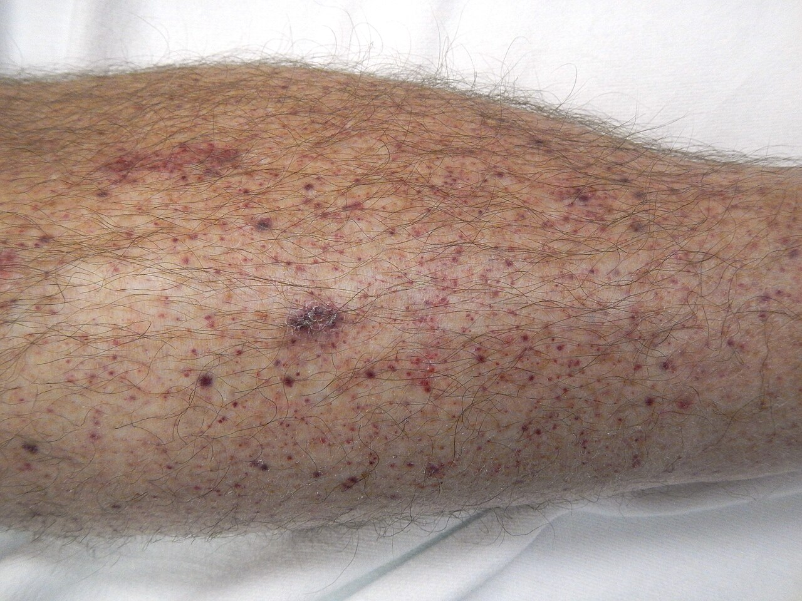
8.9.2Doštičky: málo alebo nefunkčné
Trombocytopénia je počet doštičiek pod 150 × 10⁹/l (norma 150–400 × 10⁹/l). Príznaky však prichádzajú až pri oveľa nižších hodnotách: neprimerané krvácanie po úraze pri 30–50 × 10⁹/l, samovoľné krvácanie pod 30 × 10⁹/l; pri veľmi nízkom počte hrozí krvácanie do mozgu. Príčiny sa delia podľa toho, na ktorom mieste cesty doštičky – od vzniku v dreni cez zásobu v slezine po zánik v obehu – nastala chyba:
| Kde je chyba | Mechanizmus | Príklady |
|---|---|---|
| tvorba v kostnej dreni | megakaryocytov je málo alebo netvoria doštičky | leukémia a metastázy v dreni, aplázia drene, chemoterapia a ožiarenie, myelodysplastický syndróm, vírusy |
| zadržanie v slezine | zdravá slezina drží asi tretinu doštičiek, zväčšená až 80 % | splenomegália (hypersplenizmus), veľké hemangiómy |
| rozpad protilátkami | protilátkou označené doštičky pohltia makrofágy sleziny a pečene | imunitná trombocytopénia (ITP); lieky; vírusové infekcie; pri lupuse a lymfoproliferatívnych chorobách |
| spotreba v zrazeninách | doštičky sa minú v mikrotromboch | DIC; trombotické mikroangiopatie; opakované rozsiahle trombózy; heparínom indukovaná trombocytopénia (→ 8.3.1) |
| zriedenie | náhrada veľkej straty krvi prípravkami bez doštičiek | masívne transfúzie |
Základné rozlíšenie robí kostná dreň: pri zvýšenom rozpade alebo spotrebe sú megakaryocyty zmnožené (dreň sa snaží stratu dohnať), pri poruche tvorby ich je málo.
Kedysi: idiopatická trombocytopenická purpura – choroba neznámej príčiny, pomenovaná podľa kožného prejavu. Dnes: imunitná trombocytopénia (skratka ITP ostala). Príčina známa je – autoprotilátky proti doštičkám a megakaryocytom – a purpuru veľa chorých vôbec nemá; diagnóza sa opiera o počet doštičiek pod 100 × 10⁹/l pri inak normálnom krvnom obraze. Delí sa na primárnu (bez inej choroby; u detí často náhle po viróze a sama odznie) a sekundárnu (pri lupuse, chronickej lymfocytovej leukémii, HIV); u dospelých prebieha skôr chronicky.
Trombotické mikroangiopatie spájajú trombocytopéniu s hemolytickou anémiou: v drobných cievach vznikajú doštičkové mikrotromby, o ktoré sa trieštia erytrocyty – v krvnom nátere sú ich úlomky (schistocyty). Pri trombotickej trombocytopenickej purpure (TTP) chýba enzým ADAMTS13 (aktivita pod 10 %), ktorý má strihať veľké multiméry vWF; neprestrihnuté multiméry lepia doštičky na endotel, najmä v mozgu a obličkách. Pri hemolyticko-uremickom syndróme poškodzuje endotel obličiek bakteriálny toxín po hnačkovom ochorení, typicky u malých detí. Od DIC ich odlíši to, že koagulačné faktory sa nespotrebúvajú – PT a aPTT sú v norme.
Trombocytopatia je porucha funkcie pri normálnom počte doštičiek; krváca rovnako ako trombocytopénia. Získané sú časté: kyselina acetylsalicylová a ďalšie nesteroidné antiflogistiká blokujú cyklooxygenázu, takže doštička nevytvorí tromboxán A₂ a nezhlukuje sa; podobne pôsobia ďalšie antiagreganciá vrátane monoklonových protilátok proti doštičkovým receptorom, podávané práve na tento účel; funkciu doštičiek tlmí aj urémia. Vrodené sú zriedkavé – chýba receptor pre adhéziu (Bernardov-Soulierov syndróm) alebo pre agregáciu (Glanzmannova trombasténia).
8.9.3Koagulačné faktory: chýbajú alebo sa netvoria
Koagulopatia je krvácavý stav z nedostatku alebo nefunkčnosti koagulačných faktorov. Podľa pôvodu je získaná – tá je oveľa častejšia a týka sa zvyčajne viacerých faktorov naraz – alebo vrodená, pri ktorej chýba jeden faktor.
Získané koagulopatie majú spoločného menovateľa v pečeni a vitamíne K:
- choroba pečene (cirhóza, akútne zlyhanie) – pečeň tvorí takmer všetky faktory, takže ich ubúda naraz; zároveň sa horšie odbúrava plazmín,
- nedostatok vitamínu K – bez neho sú faktory II, VII, IX a X nefunkčné. Vitamín K je rozpustný v tukoch a časť ho tvoria črevné baktérie, preto chýba pri poruche vstrebávania tukov (malabsorpcia) a po dlhej liečbe antibiotikami, ktoré črevnú flóru potlačia,
- liečba antagonistami vitamínu K (warfarín a ďalšie kumaríny) – rovnaký účinok, len zámerný,
- protilátky proti faktorom – najčastejšie proti faktoru VIII,
- spotreba faktorov v zrazeninách (konzumpčná koagulopatia) – DIC (→ 8.9.5).
Vrodené koagulopatie predstavujú tri choroby:
| Hemofília A | Hemofília B | Von Willebrandova choroba | |
|---|---|---|---|
| Čo chýba | faktor VIII | faktor IX | vWF – jeho množstvo alebo funkcia |
| Dedičnosť | viazaná na chromozóm X – chorí sú muži, ženy prenášajú; asi tretina sú nové mutácie | rovnaká | väčšinou autozómovo dominantná – obe pohlavia |
| Výskyt | asi 25 na 100 000 narodených chlapcov | asi 5 na 100 000 narodených chlapcov | najčastejšia vrodená krvácavá choroba: laboratórne asi 1 % ľudí, klinicky významná asi u 1 z 8 000 |
| Mechanizmus | na doštičke nevznikne komplex IXa–VIIIa → málo trombínu → zátka bez fibrínu | rovnaký | doštičky sa neprichytia ku kolagénu a nechránený faktor VIII sa rýchlo rozkladá |
| Obraz | krvácanie do kĺbov (koleno, lakeť) a svalov, po zákrokoch; ťažkosť zodpovedá zvyškovej aktivite faktora | nerozoznateľný od A | ľahké slizničné krvácanie, po vytrhnutí zuba, silná menštruácia; pri úplnom chýbaní vWF obraz ako hemofília |
| Testy | predĺžený aPTT, normálny PT a doštičky | rovnako | podľa typu; aPTT môže byť predĺžený pre nízky faktor VIII |
Hemofilická artropatia. Krv v kĺbe dráždi výstelku: makrofágy sa plnia hemosiderínom, synovia zhrubne a prekrví sa, a preto pri najmenšej záťaži krváca znova ⟳. Opakované krvácania napokon zničia chrupku a kĺb stuhne (ankylóza). Bod zvratu je vznik zhrubnutej, ľahko krvácajúcej synovie – preto sa chýbajúci faktor podáva preventívne, nie až pri krvácaní.
Von Willebrandov-Jürgensov syndróm. Starší eponym von Willebrandovej choroby. V zdrojoch, z ktorých kapitola čerpá, sa to nepodarilo doložiť.
8.9.4Stena cievy: krvácanie pri normálnych testoch
Vaskulopatické krvácanie vzniká, keď drobné cievy alebo väzivo, ktoré ich podopiera, nevydržia bežný tlak. Doštičky aj koagulácia sú v poriadku, krvácanie je povrchové (petechie, purpura) a zriedka ohrozuje život. Príčiny sa delia podľa toho, čo stenu oslabilo:
| Čo je so stenou | Choroba | Mechanizmus | Obraz |
|---|---|---|---|
| chybný kolagén | skorbut (nedostatok vitamínu C; u dojčiat Möllerova-Barlowova choroba) | vitamín C je kofaktor hydroxylácie prokolagénu; bez neho je kolagén nepevný (→ 5.5 Čo hojenie brzdí) | krvácanie z ďasien, okolo vlasových folikulov, pod okosticu; zlé hojenie rán |
| starecká (senilná) purpura | vekom a slnkom stenčené väzivo okolo ciev kože | tmavé škvrny na predlaktiach a chrbte rúk po nepatrnom náraze | |
| nadbytok glukokortikoidov, vrodené chyby kolagénu | útlm tvorby kolagénu, resp. chybná stavba | ľahko vznikajúce modriny | |
| imunitný zápal | IgA vaskulitída | imunokomplexy s IgA sa ukladajú pod endotel drobných ciev a v obličkových klbkách (precitlivenosť III. typu) → komplement → neutrofily rozrušia stenu | hmatná purpura na predkoleniach a zadku, bolesti brucha a kĺbov, zápal obličiek; najmä deti (vrchol 4–6 rokov) po infekcii horných dýchacích ciest |
| infekcia a toxíny | meningokoková sepsa, infekčná endokarditída | priame poškodenie endotelu, často spolu s DIC | petechie až splývajúce výrony |
| usadeniny v stene | amyloidóza | amyloid nahradí pružné zložky steny (→ 2.4.5 Amyloidóza) | purpura po miernom tlaku, typicky okolo očí |
| vrodene chybná stavba ciev | hereditárna hemoragická teleangiektázia (Renduova-Oslerova-Weberova choroba) | autozómovo dominantné mutácie génov dráhy TGF-β (ENG, ACVRL1 a ďalšie) → rozšírené tenkostenné cievky a artériovenózne spojky bez kapilár | drobné červené škvrnky na perách, jazyku a v nose; opakované krvácanie z nosa a tráviacej rúry → anémia; spojky v pľúcach, pečeni a mozgu |
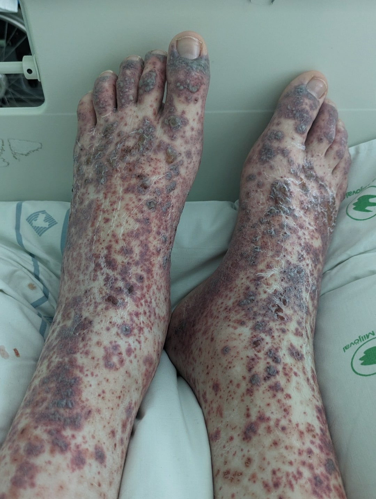
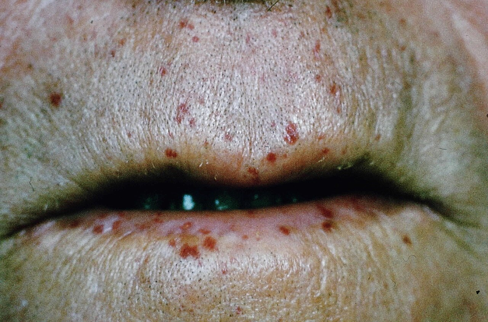
Kedysi niesla choroba mená dvoch lekárov, ktorí ju opísali (aj „alergická“ či „reumatická“ purpura). Dnes ju názvoslovie vaskulitíd volá podľa podstaty – IgA vaskulitída: vaskulitída malých ciev s depozitmi IgA. Zmena pripomína, čo má patológ v biopsii kože alebo obličky hľadať: IgA v stene ciev a v mezangiu. Obličky sú postihnuté u 20–80 % detí a rozhodujú o prognóze.
8.9.5DIC – trombóza a krvácanie naraz
Diseminovaná intravaskulárna koagulácia (DIC; aj „koagulopatia“) nie je samostatná choroba, ale spoločné vyústenie ťažkých stavov, ktoré spustia zrážanie krvi v celom obehu naraz. Je to hemostáza, ktorá stratila hranice: zátky vznikajú všade – a tam, kde ich treba, už nie je z čoho.
ťažký základný stav → do krvi sa dostane tkanivový faktor alebo je endotel poškodený v celom riečisku → trombín vzniká všade naraz, brzdy (antitrombín, proteín C) sa vyčerpajú a fibrinolýza je spočiatku utlmená → fibrínové mikrotromby v kapilárach a arteriolách → ischémia orgánov → doštičky, fibrinogén a faktory sa spotrebujú → krv sa prestane zrážať → krvácanie z vpichov, rán a slizníc
Spúšťače sa líšia tým, odkiaľ sa tkanivový faktor v krvi vezme; zoradené sú od najčastejšieho:
- z vlastných monocytov a endotelu – sepsa: bakteriálne toxíny a cytokíny nútia monocyty a endotel vystaviť tkanivový faktor a zároveň tlmia brzdy koagulácie (→ 3.6.2 SIRS a sepsa – keď sa obrana obráti proti telu),
- z rozdrveného alebo spáleného tkaniva – rozsiahle úrazy, popáleniny, veľké operácie (najmä na orgánoch, ktoré sú ním bohaté),
- z placenty a plodovej vody – predčasné odlúčenie placenty, embólia plodovou vodou a iné pôrodnícke komplikácie,
- z nádorových buniek – akútna promyelocytová leukémia, niektoré adenokarcinómy,
- z rozpadnutých krviniek a priamo poškodeného endotelu – hemolýza po nezlučiteľnej transfúzii, hadie jedy.
Šok akejkoľvek príčiny každý z týchto spúšťačov zosilní: krv tečie pomaly, endotel trpí hypoxiou a pečeň horšie odstraňuje aktivované faktory.
Dej sa udržiava sám (Obr. 8.17): mikrotromby spôsobujú ischémiu, ischemické bunky a poškodený endotel uvoľňujú ďalší tkanivový faktor a ten živí ďalšie zrážanie ⟳. Bod zvratu je vyčerpanie bŕzd a zásob – od tej chvíle pacient zároveň trombotizuje aj krváca a orgány zlyhávajú jeden po druhom.
- MA: petechie a splývajúce výrony v koži, na slizniciach a seróznych blanách; krvácanie do nadobličiek, pľúc, tráviacej rúry; drobné infarkty v obličkách, mozgu, srdci; pri najťažších formách nekrózy končekov prstov.
- MI: hyalínne (fibrínové) mikrotromby – homogénne ružové zátky v kapilárach klbiek obličiek, v pľúcnych kapilárach, v mozgu a nadobličkách; okolo nich drobné nekrózy a krvácania. Pri pitve ich býva prekvapivo málo alebo chýbajú – fibrinolýza ich stihla rozpustiť, takže ich neprítomnosť DIC nevylučuje.
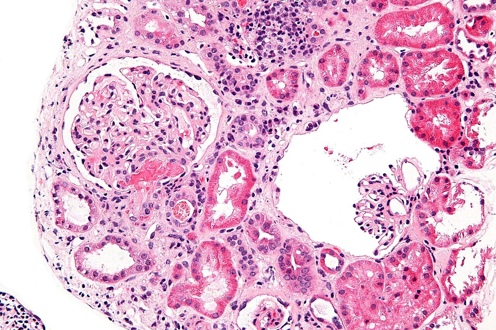
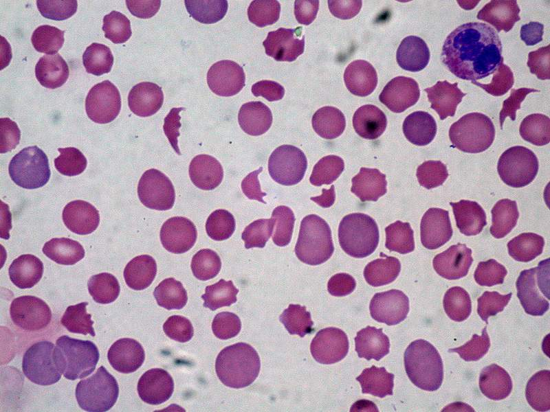
Laboratórny obraz DIC: ↓ doštičky, predĺžený PT (aj aPTT), ↓ fibrinogén, výrazne ↑ D-diméry a v nátere úlomky erytrocytov. Skóre Medzinárodnej spoločnosti pre trombózu a hemostázu (ISTH) boduje práve tieto štyri ukazovatele – počet doštičiek, produkty rozpadu fibrínu, PT a fibrinogén; ≥ 5 bodov u pacienta s vyvolávajúcou chorobou znamená zjavnú DIC. Smerodajný je vývoj: hodnoty sa zhoršujú z hodiny na hodinu.
DIC je vždy druhotná – lieči sa odstránením príčiny (antibiotiká a odstránenie ložiska pri sepse, pôrod a vybratie placenty), doštičky a plazma sa len dopĺňajú. Napriek liečbe zomiera približne 35–45 % chorých. Patológ do záveru píše základnú chorobu, ktorá DIC vyvolala, a DIC ako mechanizmus zlyhania orgánov; meningokoková sepsa s krvácaním do oboch nadobličiek je jej učebnicový obraz.
8.10Súhrn a rýchle rozlíšenie
| Vetva | Čo sa deje | Čo nájdeš | Čo rozhoduje |
|---|---|---|---|
| trombóza | zrazenina za života: poškodený endotel + porucha prúdenia + zvýšená zrážanlivosť | tepna: biely, prirastený; žila: červený, odliatok; vrstvenie; drží na stene a láme sa | miesto: tepna → infarkt, žila → embólia; čas: po začatí organizácie sa už nerozpustí |
| embólia | materiál unášaný prúdom sa zaklinuje | zo žíl v pľúcnici, zo srdca v tepnách orgánov; tuk, vzduch, plodová voda, kryštály, nádor, baktérie | veľkosť embolu a náhradný prívod povodia |
| iné prekážky | v stene (ateróm, spazmus, zápal), zvonka (stlačenie), v krvi (hustá krv), v sieti (steal) | podľa príčiny; spazmus stopu nezanechá | rýchlosť: pomalé zúženie stihnú nahradiť kolaterály |
| ischémia → infarkt | prietok pod potrebou → nekróza | klinovité ložisko: biele v srdci, obličke, slezine; červené v pľúcach a čreve; neutrofily → granulačné tkanivo → jazva | stavba riečiska, rýchlosť, citlivosť tkaniva, stav obehu |
| aktívna hyperémia | viac krvi priteká | červené, teplé | neškodná |
| venostáza | krv neodteká | modročervené, opuchnuté; siderofágy, fibróza | pri úplnom uzávere žily ⟳ → hemoragická infarzácia |
| krvácanie | roztrhnutie, nahlodanie, presakovanie | podľa miesta: petechie až hematóm, krv v dutine, navonok | množstvo × rýchlosť × miesto |
| krvácavý stav | chýbajú doštičky, faktory alebo pevnosť steny | petechie (doštičky, stena) × kĺby a svaly (faktory) | počet doštičiek, PT, aPTT |
| DIC ⟳ | koagulácia v celom obehu → spotreba → krvácanie | mikrotromby + krvácania; ↓ doštičky, ↓ fibrinogén, ↑ D-diméry | odstránenie príčiny skôr, než sa vyčerpajú brzdy |
8.11Otázky na zopakovanie
Prečo je trombus v tepne biely a v žile červený?
V tepne tečie krv rýchlo: prúd erytrocyty odplaví a na poškodenom endoteli ostanú prilepené doštičky s fibrínom. V žile krv stojí, fibrínová sieť zachytí všetky krvinky v pomere, v akom sú v krvi, takže prevládnu erytrocyty. → 8.3.2 Ako trombus vyzeráPri pitve nájdeš v pľúcnici zrazeninu. Podľa čoho rozhodneš, či je to embolus, alebo posmrtná zrazenina, a prečo na tom záleží?
Embolus je suchý, krehký, vrstvený, stočený a kalibrom zodpovedá žile, v ktorej vznikol; posmrtná zrazenina je vlhká, pružná, lesklá a dá sa vytiahnuť ako odliatok pľúcnice. Embolus je príčina smrti, posmrtná zrazenina nie je nález. → 8.3.2 Ako trombus vyzeráPrečo masívna embólia do pľúcnice zabije, ale infarkt pľúc pri nej nenájdeš?
Náhle vyradenie veľkej časti riečiska zvýši odpor, pravá komora zlyhá a ľavá nemá čo prečerpať – smrť nastane v minútach. Nekróza potrebuje hodiny, aby sa stala viditeľnou, a pľúca navyše živia bronchiálne tepny. → 8.4.2 Pľúcna trombembólia – prototypPacient s fibriláciou predsiení má náhlu bolesť brucha; druhý, tri dni po zlomenine stehnovej kosti, dýchavicu, zmätenosť a petechie. Čo embolizovalo a kam?
U prvého trombus z ľavej predsiene tepnovou cestou do mezenterickej tepny → hemoragický infarkt čreva. U druhého tuk z kostnej drene žilovou cestou do pľúc a drobné kvapôčky ďalej do mozgu a kože; odstup zodpovedá chemickému poškodeniu endotelu mastnými kyselinami. → 8.4.3 Ostatné emboly: čím sa líšiaPrečo je infarkt obličky biely a infarkt pľúc červený?
Oblička je hustý orgán s koncovými tepnami – do ložiska sa krv nemá odkiaľ dostať. Pľúca majú druhý prívod z bronchiálnych tepien a riedku stavbu, takže krv ďalej priteká do odumretých kapilár, ktoré ju neudržia. → 8.6.2 Infarkt: biely a červenýPacient zomrel hodinu po začiatku bolesti na hrudníku. Čo nájdeš v myokarde a čo potvrdí diagnózu?
V myokarde nič alebo takmer nič – bielkoviny mŕtvych buniek nestihli zdenaturovať a neutrofily ešte neprišli (koagulačná nekróza je viditeľná až po hodinách). Diagnózu nesie čerstvý trombus na prasknutom pláte vencovitej tepny. → 8.6.3 Infarkt v časeČím sa líši opuch nohy pri hlbokej žilovej trombóze od opuchu pri flegmóne – a čo je v tkanive?
Pri trombóze stúpne hydrostatický tlak pred prekážkou a cez neporušenú stenu sa pretlačí transsudát chudobný na bielkoviny. Pri flegmóne mediátory zápalu zvýšia priepustnosť steny a uniká exsudát s bielkovinami a neutrofilmi. → 3.3 Cievna fáza – exsudáciaPrečo sa črevo zaškrtené v prietrži stane nekrotickým, hoci tepna spočiatku ostáva priechodná?
Tenkostenné žily sa stlačia skôr než tepna; krv priteká, neodteká, tlak v kapilárach a opuch rastú a napokon stlačia aj tepnu ⟳. Bod zvratu je chvíľa, keď tlak v tkanive prevýši tlak v tepne – potom vzniká hemoragická infarzácia. → 8.7 Hyperémia – priveľa krvi v riečiskuChlapec má po páde opuchnuté koleno plné krvi, bez petechií; dievča má petechie na predkoleniach a krváca z nosa. Ktorá zložka hemostázy chýba komu a ktorý test to ukáže?
Chlapcovi koagulačný faktor (hemofília): zátka vznikne, ale bez fibrínu sa rozpadne, preto krváca hlboko a s odstupom – predĺžený aPTT. Dievčaťu doštičky (napr. imunitná trombocytopénia): chýba prvotná zátka v drobných cievach – nízky počet doštičiek, PT a aPTT v norme. → 8.9.1 Tri príčiny a ich obrazPrečo pacientka s DIC po odlúčení placenty zároveň trombotizuje aj krváca?
Tkanivový faktor z placenty spustí tvorbu trombínu v celom obehu; mikrotromby upchávajú kapiláry a pritom spotrebujú doštičky, fibrinogén a faktory, takže krv sa na mieste poranenia už nezrazí. Ischémia uvoľňuje ďalší tkanivový faktor ⟳. → 8.9.5 DIC – trombóza a krvácanie naraz
8.12Zdroje
- Zámečník J. a kol.: Patologie, 2. vyd., Praha: LD Prager Publishing, 2024 (kap. 2 Hemodynamické příčiny lidských chorob; kap. 24 Krvácivé choroby; kap. 3 – hematogénne pigmenty). ISBN 978-80-11-04919-5.
- Gando S., Levi M., Toh C. H.: Disseminated intravascular coagulation. J Intensive Care 2025;13:32. doi:10.1186/s40560-025-00794-y
- Papageorgiou C., Jourdi G., Adjambri E. et al.: Disseminated Intravascular Coagulation: An Update on Pathogenesis, Diagnosis, and Therapeutic Strategies. Clin Appl Thromb Hemost 2018;24(9 Suppl):8S–28S. doi:10.1177/1076029618806424
- Bala M., Catena F., Kashuk J. et al.: Acute mesenteric ischemia: updated guidelines of the World Society of Emergency Surgery. World J Emerg Surg 2022;17:54. doi:10.1186/s13017-022-00443-x
- Michaud K., Basso C., d'Amati G. et al.: Diagnosis of myocardial infarction at autopsy: AECVP reappraisal in the light of the current clinical classification. Virchows Arch 2020;476:179–194. doi:10.1007/s00428-019-02662-1
- Cuker A., Arepally G. M., Chong B. H. et al.: American Society of Hematology 2018 guidelines for management of venous thromboembolism: heparin-induced thrombocytopenia. Blood Adv 2018;2(22):3360–3392. doi:10.1182/bloodadvances.2018024489 (abstrakt)
- Capuano I., Riccio E., Buonanno P., Tufano A., Pisani A.: Heparin-induced thrombocytopenia: a challenging diagnosis in haemodialysis – state of art and review of the literature. Clin Kidney J 2026;19:sfag062. doi:10.1093/ckj/sfag062
- Hoffman M., Monroe D. M.: A cell-based model of hemostasis. Thromb Haemost 2001;85(6):958–965. doi:10.1055/s-0037-1615947 (abstrakt)
- Versteeg H. H., Heemskerk J. W. M., Levi M., Reitsma P. H.: New fundamentals in hemostasis. Physiol Rev 2013;93(1):327–358. doi:10.1152/physrev.00016.2011 (abstrakt)
- Bagot C. N., Arya R.: Virchow and his triad: a question of attribution. Br J Haematol 2008;143(2):180–190. doi:10.1111/j.1365-2141.2008.07323.x (abstrakt)
- Kujovich J. L.: Factor V Leiden thrombophilia. Genet Med 2011;13(1):1–16. doi:10.1097/GIM.0b013e3181faa0f2 (abstrakt)
- Di Nisio M., Camporese G., Di Micco P. et al.: Treatment of Superficial Vein Thrombosis: Recent Advances, Unmet Needs and Future Directions. Healthcare (Basel) 2024;12(15):1517. doi:10.3390/healthcare12151517
- Fineschi V., Turillazzi E., Neri M., Pomara C., Riezzo I.: Histological age determination of venous thrombosis: a neglected forensic task in fatal pulmonary thrombo-embolism. Forensic Sci Int 2009;186(1–3):22–28. doi:10.1016/j.forsciint.2009.01.006 (abstrakt)
- Peracaula M., Sebastian L., Francisco I. et al.: Decoding Pulmonary Embolism: Pathophysiology, Diagnosis, and Treatment. Biomedicines 2024;12(9):1936. doi:10.3390/biomedicines12091936
- Gagno G., Padoan L., D'Errico S. et al.: Pulmonary Embolism Presenting with Pulmonary Infarction: Update and Practical Review of Literature Data. J Clin Med 2022;11(16):4916. doi:10.3390/jcm11164916
- Russo G. B., Purisch S. E., Countouris M. E. et al.: Stroke Prevention in Pregnancy and Postpartum in Patients With Patent Foramen Ovale. JACC Adv 2025;4:102098. doi:10.1016/j.jacadv.2025.102098
- Miyake T., Okada H., Okada H., Kanda N.: Advances and uncertainties in fat embolism syndrome: a review. Trauma Surg Acute Care Open 2026;11:e001913. doi:10.1136/tsaco-2025-001913
- Yesilaras M., Atilla O. D., Aksay E., Kilic T. Y.: Retrograde cerebral air embolism. Am J Emerg Med 2014;32(12):1562.e1–2. doi:10.1016/j.ajem.2014.05.043 (abstrakt)
- Jin Z., Zhu Q., Zheng J. et al.: Circulating Bubbles in Decompression Sickness: Pathophysiology and Experimental Models. Biomolecules 2026;16(9):1339. doi:10.3390/biom16091339
- Timraz J. H., Ahmed R. A., Metwali N. Y. et al.: Risk factors and predisposing conditions for amniotic fluid embolism: a comprehensive review. J Med Life 2025;18(4):277–284. doi:10.25122/jml-2024-0406
- Ozkok A.: Cholesterol-embolization syndrome: current perspectives. Vasc Health Risk Manag 2019;15:209–220. doi:10.2147/VHRM.S175150
- Bloehdorn J., Cragg M. S., Bommer M.: Current standards and novel concepts in thrombotic thrombocytopenic purpura. Front Med (Lausanne) 2026;13:1806030. doi:10.3389/fmed.2026.1806030
- Iorio A., Stonebraker J. S., Chambost H. et al.: Establishing the Prevalence and Prevalence at Birth of Hemophilia in Males: A Meta-analytic Approach Using National Registries. Ann Intern Med 2019;171(8):540–546. doi:10.7326/M19-1208 (abstrakt)
- Abou-Ismail M. Y., Kouides P. A., James P. D., Connell N. T.: von Willebrand disease: an illustrated review. Res Pract Thromb Haemost 2026;10:106838. doi:10.1016/j.rpth.2026.106838
- Xiu C., Zhang J., Ju B., Ma T., Lv J.: Immune mechanism of IgA vasculitis with nephritis: a narrative review. Front Immunol 2026;17:1754289. doi:10.3389/fimmu.2026.1754289
- Ficany A., Del Alamo M., Bernabeu C., Shovlin C. L., Rossi E.: Epistaxis Prevention, Treatment, and Future Perspectives for Hereditary Hemorrhagic Telangiectasia. J Clin Med 2025;14(21):7724. doi:10.3390/jcm14217724
- Di Nora A., Finocchiaro M. C., Pizzo F. et al.: Scurvy, a not obsolete disorder: Clinical report in eight young children and literature review. Open Med (Wars) 2025;20:20241086. doi:10.1515/med-2024-1086
- StatPearls (NCBI Bookshelf; kapitoly čítané cez Europe PMC, stav 10. 10. 2026): Physiology, Hemostasis · Histology, Platelets · Prothrombin Time · Partial Thromboplastin Time · Heparin · Thrombosis · Factor V Leiden Mutation · Antiphospholipid Syndrome · Nephrotic Syndrome · Heparin-Induced Thrombocytopenia · Deep Venous Thrombosis · Acute Pulmonary Embolism · Paradoxical Embolism · Fat Embolism and Fat Embolism Syndrome · Amniotic Fluid Embolism · Septic Embolism · Decompression Sickness · Coronary Artery Vasospasm and Prinzmetal Angina · Raynaud Disease · Subclavian Steal Syndrome · Arteriovenous Fistula · Hyperviscosity Syndrome · Bowel Ischemia · Splenic Infarcts · Testicular Torsion · Ovarian Torsion · Petechiae · Hemorrhagic Shock · Upper Gastrointestinal Bleeding · Abnormal Uterine Bleeding · Thrombocytopenia · Immune Thrombocytopenia · Vitamin K Deficiency in Neonates and Adults · Hemophilia A · Hemarthrosis · Von Willebrand Disease · Vitamin C Deficiency · Actinic Purpura · IgA Vasculitis (Henoch-Schönlein Purpura) · Amyloidosis · Hereditary Hemorrhagic Telangiectasia (HHT) · Disseminated Intravascular Coagulation · Waterhouse-Friderichsen Syndrome
Autor, licencia a odkaz na zdroj sú pri každom obrázku; súhrn je v registri ZDROJE-OBRAZKOV.md. Obr. 8.1, 8.4 a 8.17 sú vlastné schémy (CC BY-SA 4.0).
Pokračuje v: → 9 Celkové poruchy krvného obehu